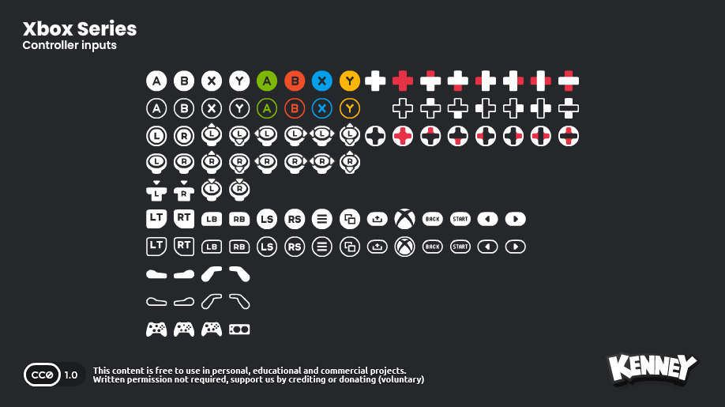
游戏手柄按键图标素材包｜演示条目 01（数字下载）
包含不同控制器与键鼠的输入提示图标；交付格式以清单为准。展示用测试商品；交付文件、格式、版本及授权范围以订单页面说明为准。图片仅作同类内容的视觉示意，不代表交付文件。
Kenney input-prompts: preview-xbox-series.png
查看图片来源 查看许可 c1cc209f-55f8-4655-af63-5f732c518ac0已找到 225/225 张待审图；75 件已有订单的一次性商品未纳入。本目录保存来源与预览，上传状态以运行库为准。
实体照片及开源素材截图都是参考图，不代表实际二手商品或订单交付文件。请核对图片主体、许可和商品文字，再决定是否上传。

包含不同控制器与键鼠的输入提示图标；交付格式以清单为准。展示用测试商品；交付文件、格式、版本及授权范围以订单页面说明为准。图片仅作同类内容的视觉示意，不代表交付文件。
Kenney input-prompts: preview-xbox-series.png
查看图片来源 查看许可 c1cc209f-55f8-4655-af63-5f732c518ac0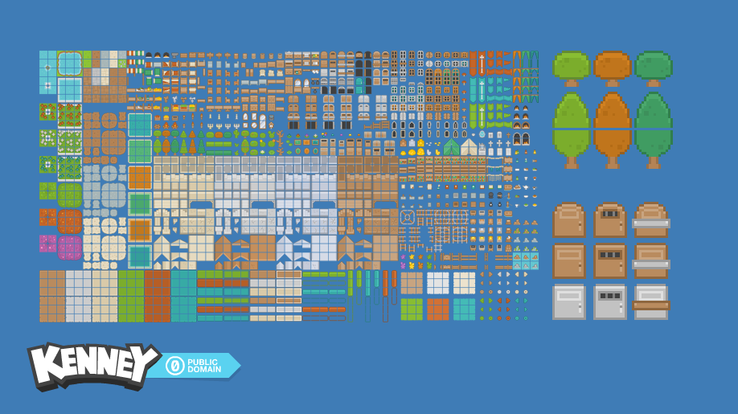
适合像素风地牢游戏的道具图标素材。展示用测试商品；交付文件、格式、版本及授权范围以订单页面说明为准。图片仅作同类内容的视觉示意，不代表交付文件。
Kenney roguelike-rpg-pack: preview.png
查看图片来源 查看许可 e1e5e2e8-9692-4fb1-8f9c-beaf619cb4fe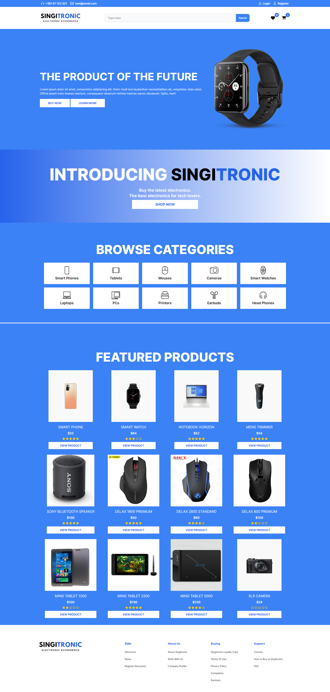
商品列表与详情卡片布局素材；可用于界面原型。展示用测试商品；交付文件、格式、版本及授权范围以订单页面说明为准。图片仅作同类内容的视觉示意，不代表交付文件。
Home page — project README
查看图片来源 查看许可 02d712e9-3494-402d-9846-b8d9e7c7ac88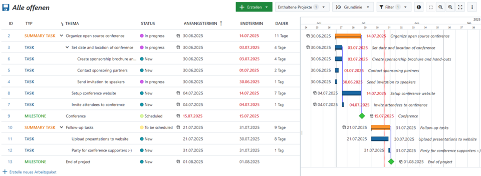
包含任务列表、筛选和状态管理示例；部署环境需自行配置。展示用测试商品；交付文件、格式、版本及授权范围以订单页面说明为准。图片仅作同类内容的视觉示意，不代表交付文件。
File:Openproject gantt.PNG
查看图片来源 查看许可 65f6f6ef-ecf8-46a0-abe4-d91049b9bbf7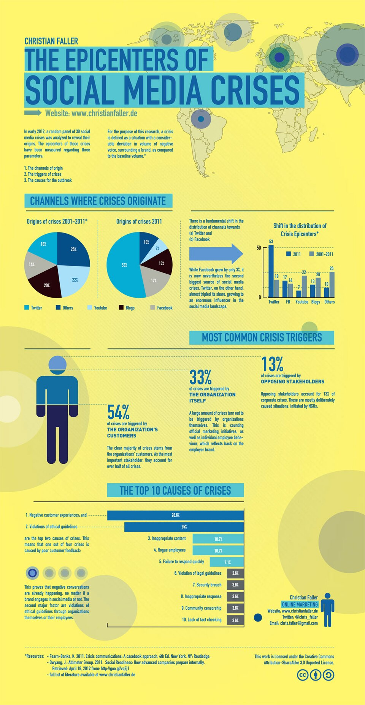
适合图文账号展示社交媒体数据的图表版式参考。展示用测试商品；交付文件、格式、版本及授权范围以订单页面说明为准。图片仅作同类内容的视觉示意，不代表交付文件。
File:Social Media Krisen Infografik 2012, Christian Faller.jpg
查看图片来源 查看许可 fdece275-af5f-4dec-a32b-2048500b9419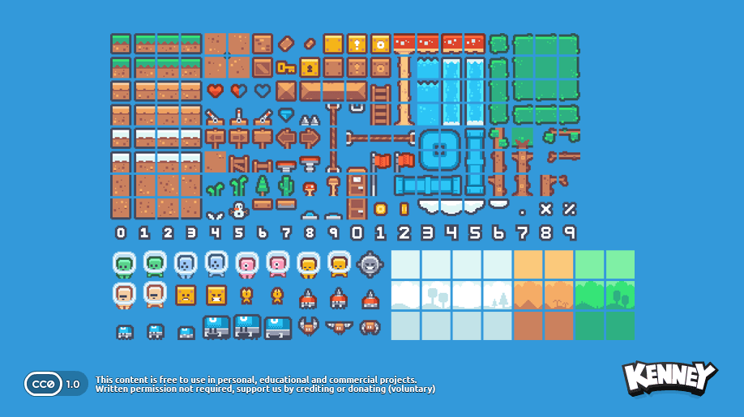
游戏角色帧素材；需按所附授权范围使用。展示用测试商品；交付文件、格式、版本及授权范围以订单页面说明为准。图片仅作同类内容的视觉示意，不代表交付文件。
Kenney pixel-platformer: preview.png
查看图片来源 查看许可 db01224f-6523-4c6d-a597-78195832505d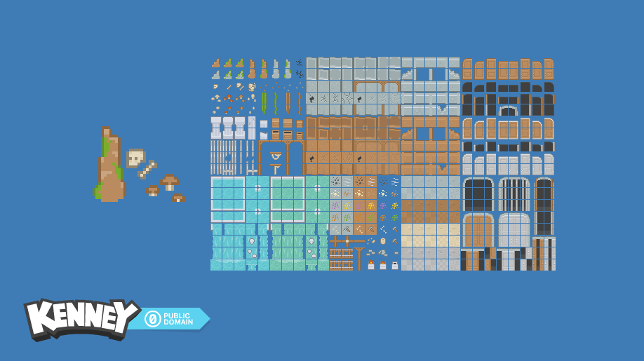
草地、道路和建筑图块示例。展示用测试商品；交付文件、格式、版本及授权范围以订单页面说明为准。图片仅作同类内容的视觉示意，不代表交付文件。
Kenney roguelike-caves-dungeons: preview.png
查看图片来源 查看许可 72179090-89a9-4743-8235-aa74940a8e8f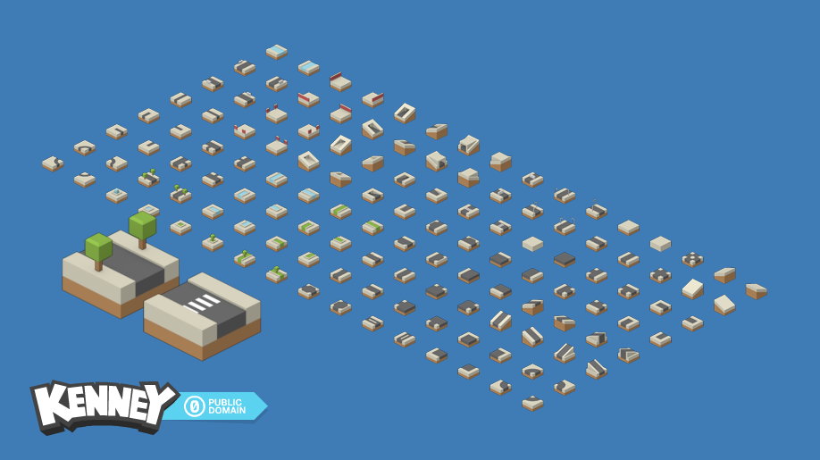
用于演示和视觉稿的等距建筑插画。展示用测试商品；交付文件、格式、版本及授权范围以订单页面说明为准。图片仅作同类内容的视觉示意，不代表交付文件。
Kenney isometric-tiles-city: preview.png
查看图片来源 查看许可 7ce5c7ba-efdd-4b63-b2fd-ddeb00672eba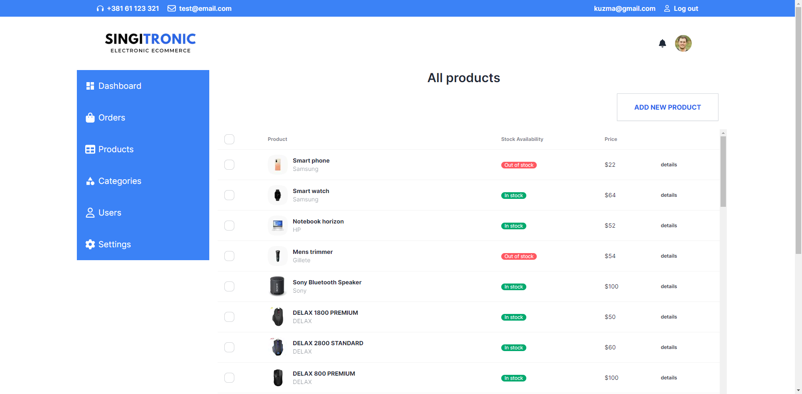
商品、库存与报表页面示例；不含真实业务数据。展示用测试商品；交付文件、格式、版本及授权范围以订单页面说明为准。图片仅作同类内容的视觉示意，不代表交付文件。
Admin dashboard - All products page — project README
查看图片来源 查看许可 cc7a2cfd-48d1-4538-8521-cc265ca21044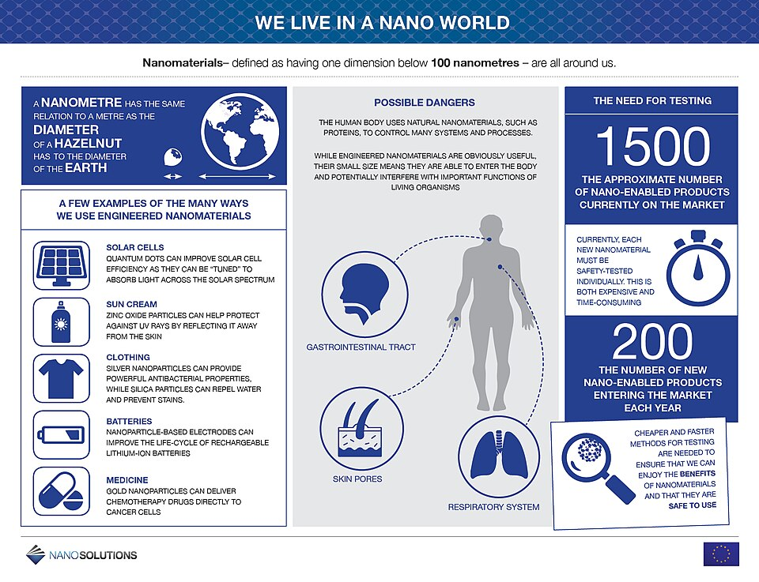
包含多种主题的信息图和统计图表版式参考。展示用测试商品；交付文件、格式、版本及授权范围以订单页面说明为准。图片仅作同类内容的视觉示意，不代表交付文件。
File:1. Infographic – We live in a nano world.jpg
查看图片来源 查看许可 7af75f2b-54f0-4ac5-81d7-b4105cb6f76b桌面与移动端分辨率壁纸文件。展示用测试商品；交付文件、格式、版本及授权范围以订单页面说明为准。图片仅作同类内容的视觉示意，不代表交付文件。
File:"Balancing on the Brink." Eagle Peak summit, Chugach Mountains, Alaska (5434541912).jpg
查看图片来源 查看许可 d8f52fb3-9235-4849-a446-2fa99e3878bc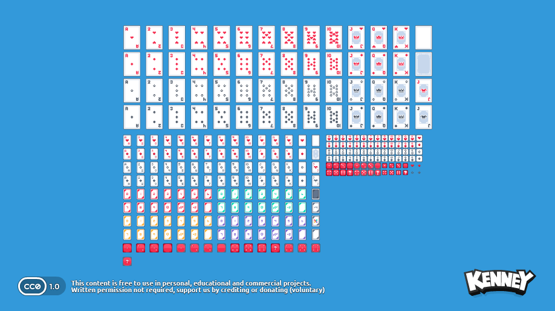
骰子造型与桌游界面配图素材。展示用测试商品；交付文件、格式、版本及授权范围以订单页面说明为准。图片仅作同类内容的视觉示意，不代表交付文件。
Kenney playing-cards-pack: preview.png
查看图片来源 查看许可 9ec0840e-59f5-48c1-be66-a108cf7f2162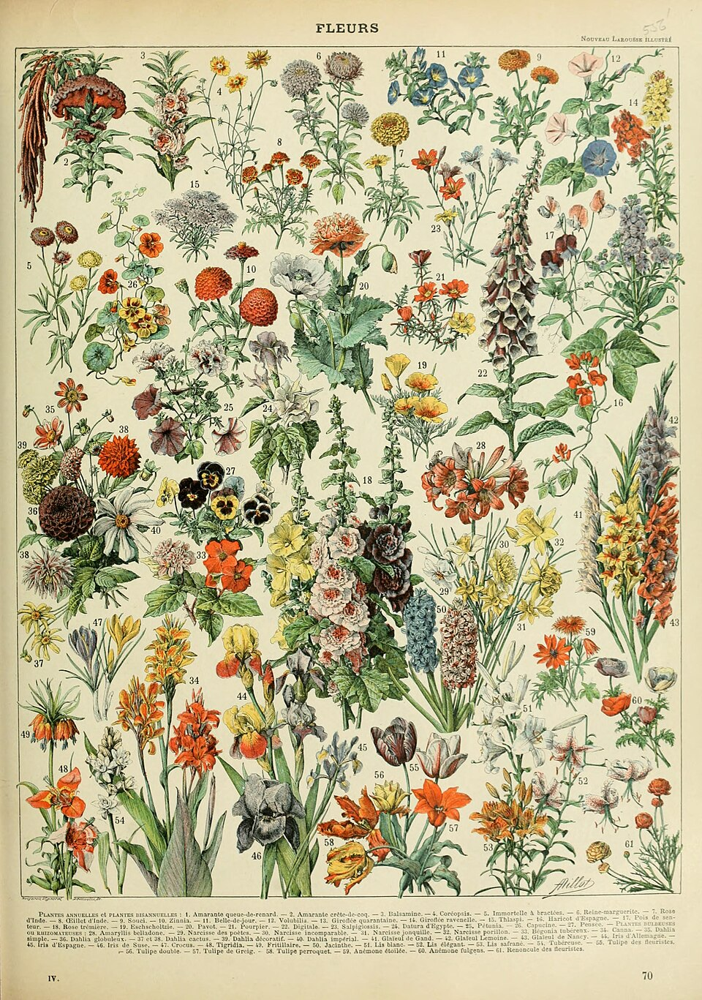
适合包装和网页配图的植物元素。展示用测试商品；交付文件、格式、版本及授权范围以订单页面说明为准。图片仅作同类内容的视觉示意，不代表交付文件。
File:Adolphe Millot fleurs A.jpg
查看图片来源 9b0f7e11-65de-4281-b699-53ddcc9e1a97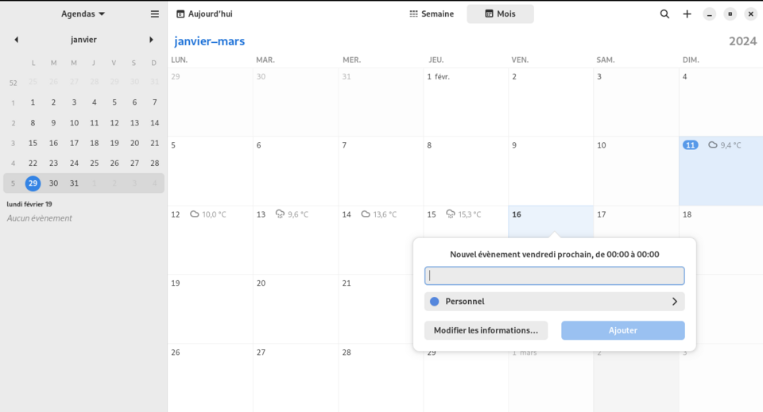
日期选择和预约时段的前端实现示例。展示用测试商品；交付文件、格式、版本及授权范围以订单页面说明为准。图片仅作同类内容的视觉示意，不代表交付文件。
File:Agenda de GNOME (version 45.1).png
查看图片来源 查看许可 ef99dcfe-097d-4a98-a6e0-be130dc4f10c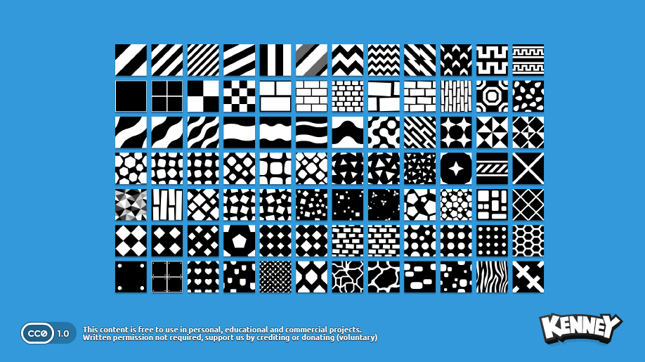
重复纹理背景；适合网页和海报设计。展示用测试商品；交付文件、格式、版本及授权范围以订单页面说明为准。图片仅作同类内容的视觉示意，不代表交付文件。
Kenney pattern-pack: preview.png
查看图片来源 查看许可 230a1754-35be-458f-b31c-562fd8a3c114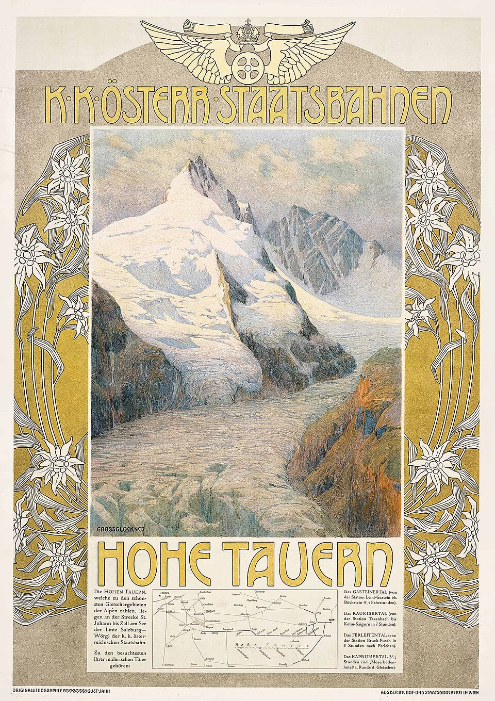
可编辑标题、留白和装饰版式。展示用测试商品；交付文件、格式、版本及授权范围以订单页面说明为准。图片仅作同类内容的视觉示意，不代表交付文件。
File:Gustav Jahn - Hohe Tauern, Grossglockner (Werbeplakat).jpg
查看图片来源 3f626037-60f6-44d1-8dd1-021a78863a1f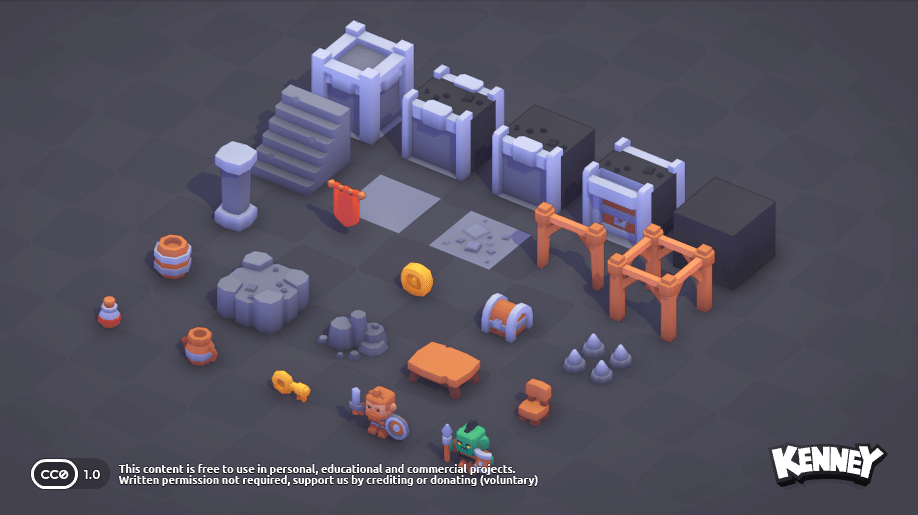
适合游戏原型的宝箱模型示例。展示用测试商品；交付文件、格式、版本及授权范围以订单页面说明为准。图片仅作同类内容的视觉示意，不代表交付文件。
Kenney mini-dungeon: preview.png
查看图片来源 查看许可 a13903be-9d57-491b-9724-34a5d10fd394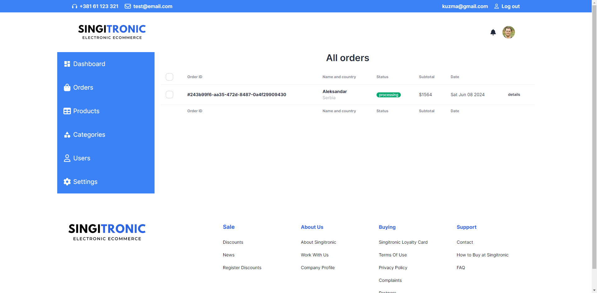
数据卡片、导航和筛选组件设计稿。展示用测试商品；交付文件、格式、版本及授权范围以订单页面说明为准。图片仅作同类内容的视觉示意，不代表交付文件。
Admin dashboard - All orders page — project README
查看图片来源 查看许可 71f44e91-371a-4e3c-947a-c6e068b0cd5a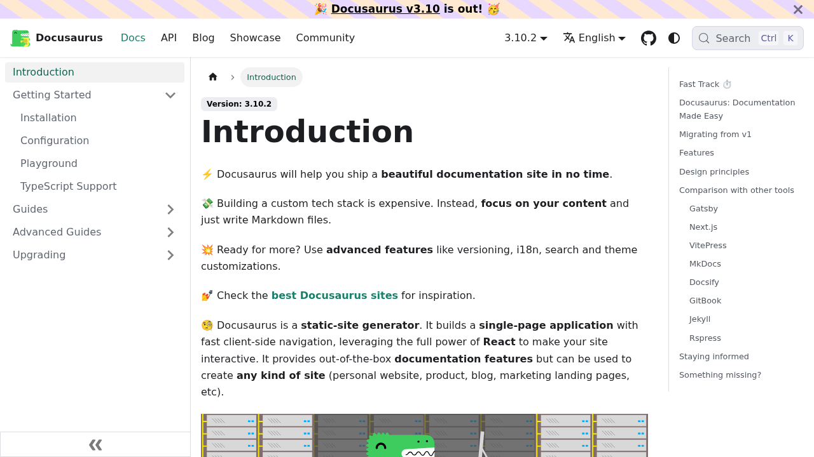
导航、搜索和文章页面布局示例。展示用测试商品；交付文件、格式、版本及授权范围以订单页面说明为准。图片仅作同类内容的视觉示意，不代表交付文件。
Docusaurus documentation: /docs
查看图片来源 查看许可 45267d09-ea43-4128-8a05-95724940af85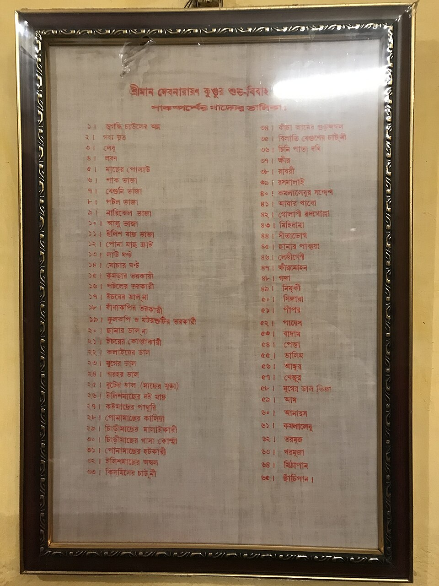
适合咖啡馆和简餐品牌的菜单版式。展示用测试商品；交付文件、格式、版本及授权范围以订单页面说明为准。图片仅作同类内容的视觉示意，不代表交付文件。
File:A menu card from early 19th century Bengal.jpg
查看图片来源 查看许可 fffa4e51-3bcb-4f0f-8441-c4f5a191ded3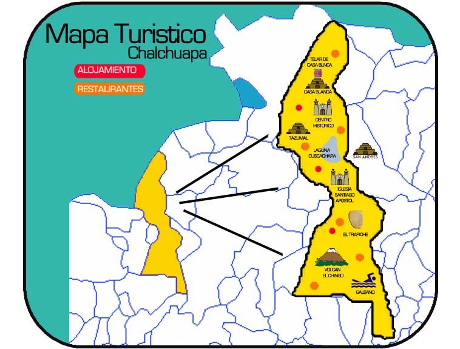
线路与站点信息展示模板。展示用测试商品；交付文件、格式、版本及授权范围以订单页面说明为准。图片仅作同类内容的视觉示意，不代表交付文件。
File:Mapa Turistico CHALCHUAPA.jpg
查看图片来源 cc2a25f0-fc58-43e3-8505-43accf349a54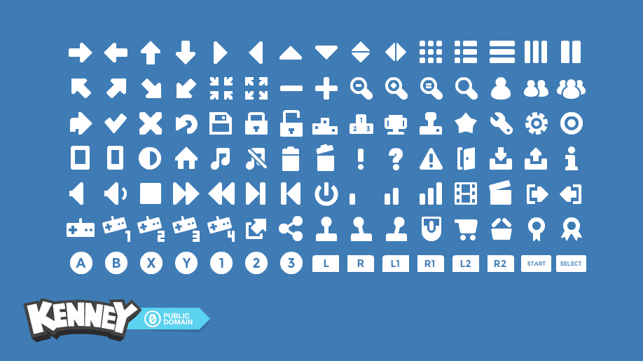
生命、护盾和能量等状态图标。展示用测试商品；交付文件、格式、版本及授权范围以订单页面说明为准。图片仅作同类内容的视觉示意，不代表交付文件。
Kenney game-icons: preview.png
查看图片来源 查看许可 8282104e-d600-4ccc-910f-2592a41c1a77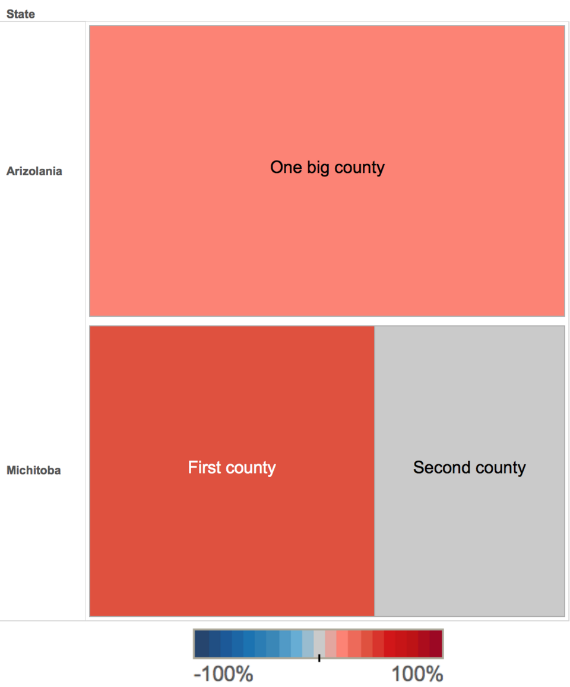
用于页面横幅与演示封面的渐变素材。展示用测试商品；交付文件、格式、版本及授权范围以订单页面说明为准。图片仅作同类内容的视觉示意，不代表交付文件。
File:Color gradient example 1.png
查看图片来源 查看许可 1dcf3473-e470-4ca8-b889-b2715353d547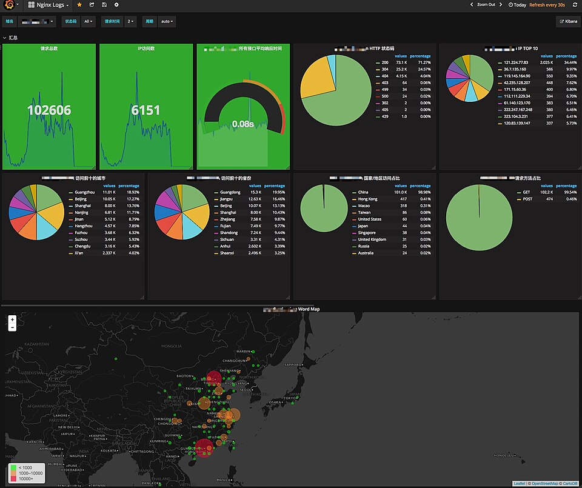
常见统计卡片与图表页面示例。展示用测试商品；交付文件、格式、版本及授权范围以订单页面说明为准。图片仅作同类内容的视觉示意，不代表交付文件。
File:Grafana Dashboard (2017).jpg
查看图片来源 查看许可 eec728db-6e78-49cb-8d75-0b0388057ad3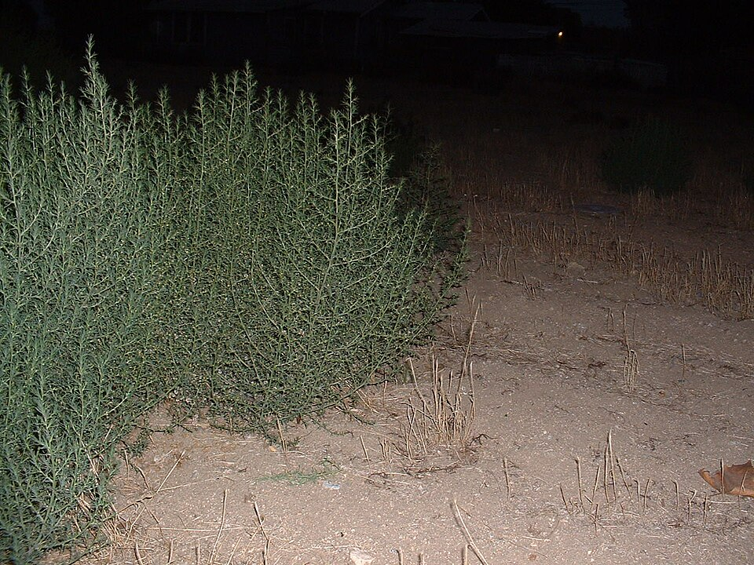
适合页面横幅与商品展示的不同背景图参考。展示用测试商品；交付文件、格式、版本及授权范围以订单页面说明为准。图片仅作同类内容的视觉示意，不代表交付文件。
File:Bakersfield desert background.JPG
查看图片来源 查看许可 27f53a4f-b22f-4a52-a335-6d1635295efb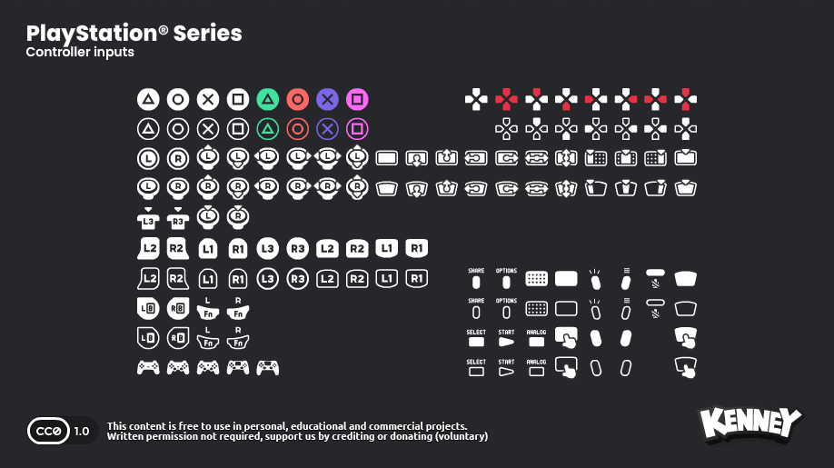
包含不同控制器与键鼠的输入提示图标；交付格式以清单为准。展示用测试商品；交付文件、格式、版本及授权范围以订单页面说明为准。图片仅作同类内容的视觉示意，不代表交付文件。
Kenney input-prompts: preview-playstation-series.png
查看图片来源 查看许可 7f8aa2c5-a3a6-4123-864d-b8556e2456c8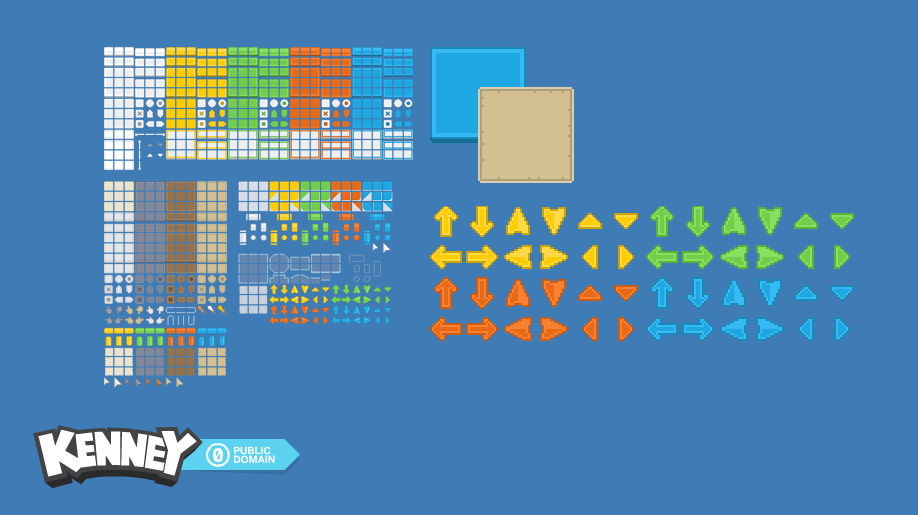
街机风格菜单与按钮组件。展示用测试商品；交付文件、格式、版本及授权范围以订单页面说明为准。图片仅作同类内容的视觉示意，不代表交付文件。
Kenney pixel-ui-pack: preview.png
查看图片来源 查看许可 011fa188-c87e-453e-88d1-3d730a3d9454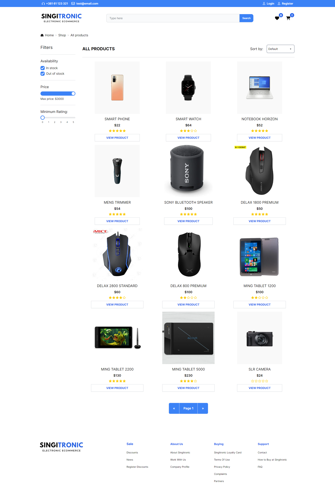
商品列表与详情卡片布局素材；可用于界面原型。展示用测试商品；交付文件、格式、版本及授权范围以订单页面说明为准。图片仅作同类内容的视觉示意，不代表交付文件。
Shop page — project README
查看图片来源 查看许可 1854f3ee-b7b2-430c-a32b-8ac122a67d8b响应式展示页面和项目详情示例。展示用测试商品；交付文件、格式、版本及授权范围以订单页面说明为准。图片仅作同类内容的视觉示意，不代表交付文件。
codewithsadee/pfolio: readme-images/desktop.png
查看图片来源 查看许可 7d74a977-b2a2-44ce-8bb4-3ff87782164d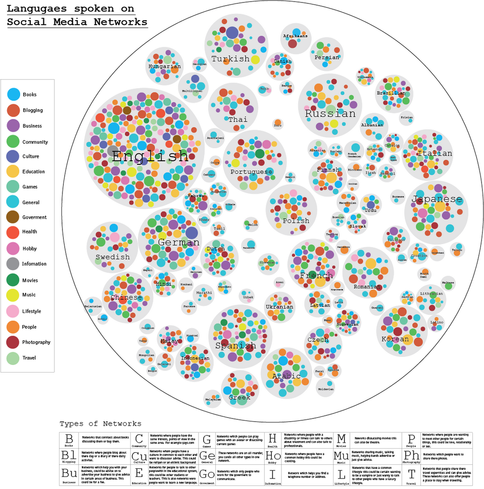
适合图文账号展示社交媒体数据的图表版式参考。展示用测试商品；交付文件、格式、版本及授权范围以订单页面说明为准。图片仅作同类内容的视觉示意，不代表交付文件。
File:Languages in social media websites.png
查看图片来源 查看许可 c8dda071-1ff6-4cd8-a97b-9cdcbd8ed95f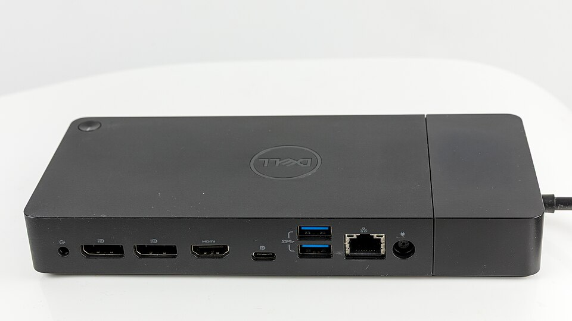
适合为笔记本扩展显示器和常用外设接口。展示用测试商品；具体成色、配件、尺寸及功能以卖家验货信息为准。图片为同类实拍示意，不代表本件商品实物。
File:Dell WD19 (model K20A)-5814.jpg
查看图片来源 查看许可 87f4af77-f238-40d0-819f-00c777828ec2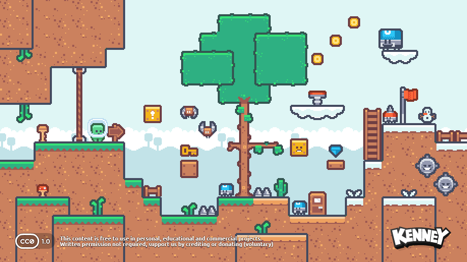
游戏角色帧素材；需按所附授权范围使用。展示用测试商品；交付文件、格式、版本及授权范围以订单页面说明为准。图片仅作同类内容的视觉示意，不代表交付文件。
Kenney pixel-platformer: samplea.png
查看图片来源 查看许可 16281835-9483-4db2-b8d0-20979bf83c23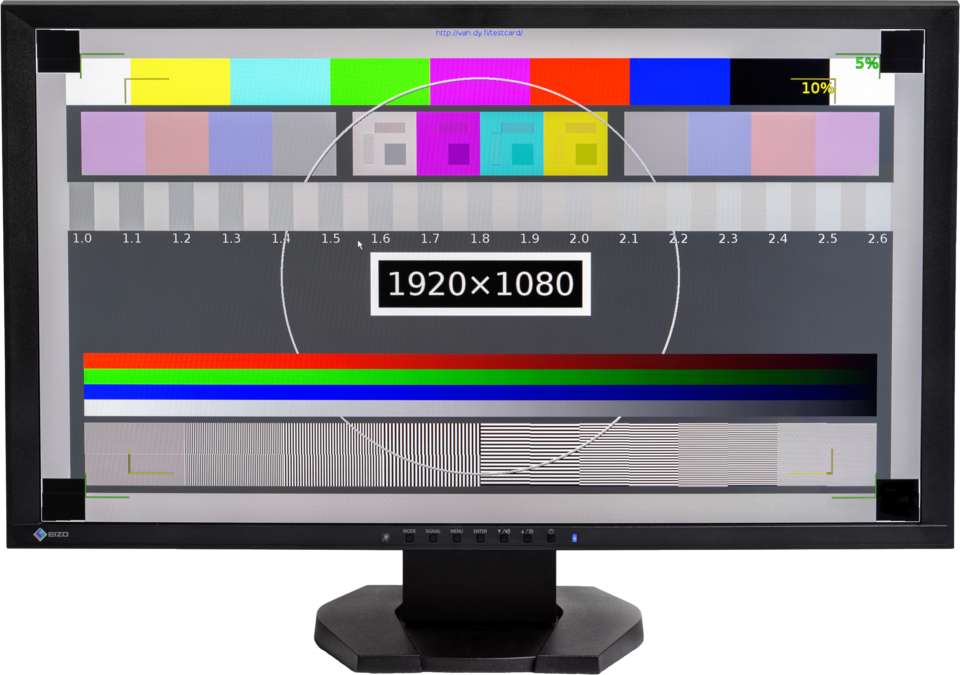
适合桌面办公与日常内容创作；尺寸和底座以卖家清单为准。展示用测试商品；具体成色、配件、尺寸及功能以卖家验货信息为准。图片为同类实拍示意，不代表本件商品实物。
File:EIZO Foris FG2421 VGA computer monitor displaying test pattern.png
查看图片来源 查看许可 818612f7-90e9-49ea-b44b-c9592b64face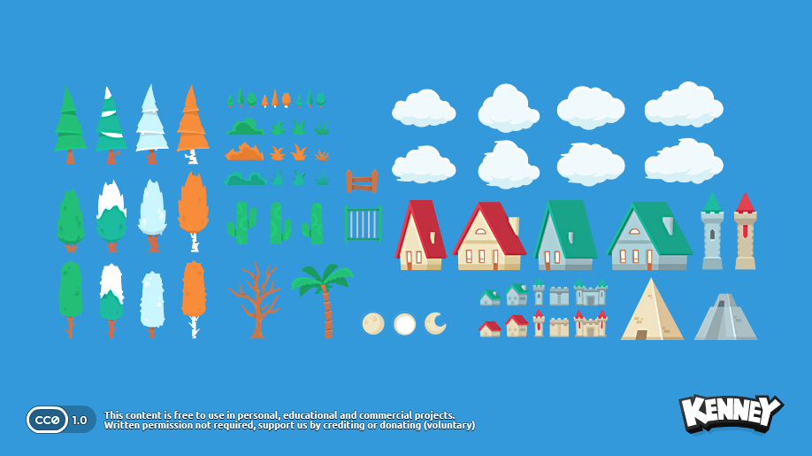
横向卷轴游戏场景背景示例。展示用测试商品；交付文件、格式、版本及授权范围以订单页面说明为准。图片仅作同类内容的视觉示意，不代表交付文件。
Kenney background-elements-remastered: preview.png
查看图片来源 查看许可 4d7a352d-e72b-4ec6-a8c2-0aa08cafdc9d秋冬配饰；面料成分和尺寸以卖家标签为准。展示用测试商品；具体成色、配件、尺寸及功能以卖家验货信息为准。图片为同类实拍示意，不代表本件商品实物。
File:Knit cap and loop scarf set.jpg
查看图片来源 查看许可 1121387e-d070-4978-9167-36b43aec6760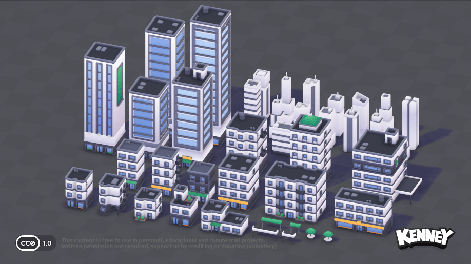
用于演示和视觉稿的等距建筑插画。展示用测试商品；交付文件、格式、版本及授权范围以订单页面说明为准。图片仅作同类内容的视觉示意，不代表交付文件。
Kenney city-kit-commercial: preview.png
查看图片来源 查看许可 819451d3-ff43-4d90-b5ca-a8b6dfbc09a5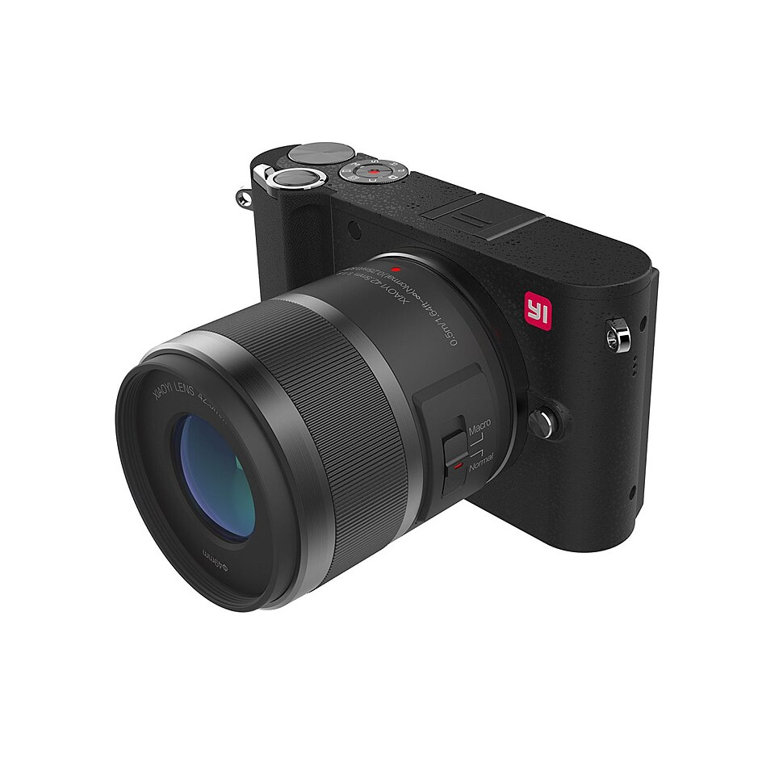
可更换镜头相机机身；镜头和存储卡另行确认。展示用测试商品；具体成色、配件、尺寸及功能以卖家验货信息为准。图片为同类实拍示意，不代表本件商品实物。
File:Mirrorless camera.jpg
查看图片来源 查看许可 5314030f-550c-425e-bf04-a293d9a2e997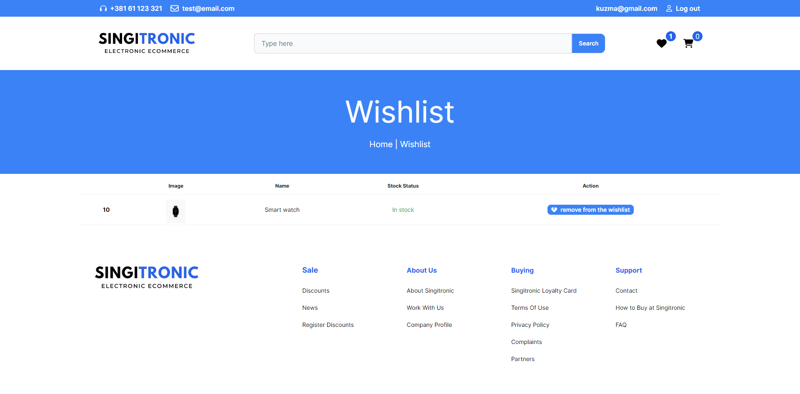
商品网格、筛选和详情页交互示例。展示用测试商品；交付文件、格式、版本及授权范围以订单页面说明为准。图片仅作同类内容的视觉示意，不代表交付文件。
Wishlist page — project README
查看图片来源 查看许可 36624191-70f9-4626-998a-86b20b47c7ee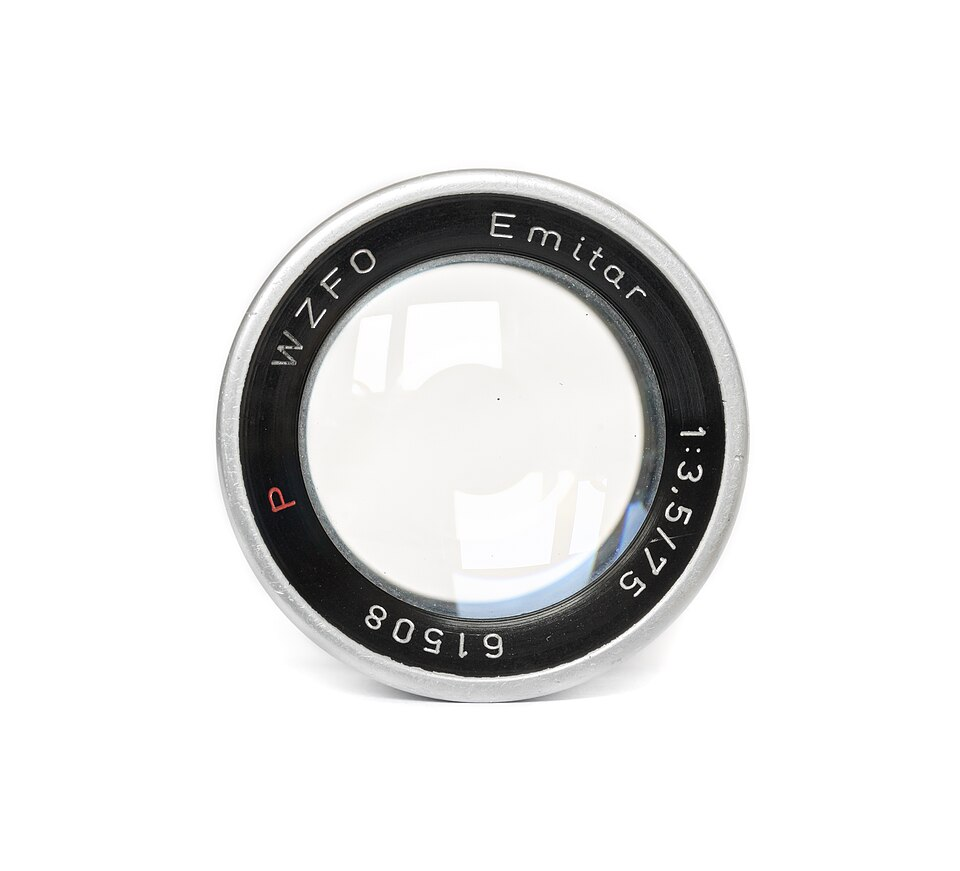
适合人像及日常街拍；购买前需确认卡口。展示用测试商品；具体成色、配件、尺寸及功能以卖家验货信息为准。图片为同类实拍示意，不代表本件商品实物。
File:Emitar lens 02.jpg
查看图片来源 查看许可 5b6901ef-322f-472c-abe5-03ec618c4e93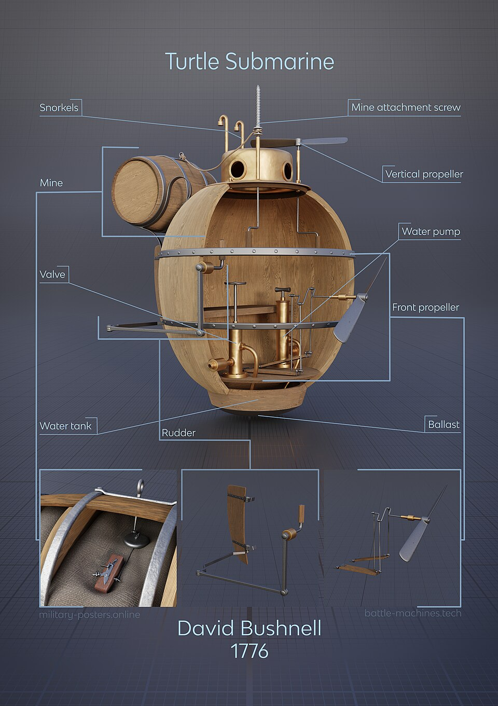
包含多种主题的信息图和统计图表版式参考。展示用测试商品；交付文件、格式、版本及授权范围以订单页面说明为准。图片仅作同类内容的视觉示意，不代表交付文件。
File:03 turtle infographics A3.jpg
查看图片来源 查看许可 80e29a05-f2f0-43e5-9e14-a8fda83e24d2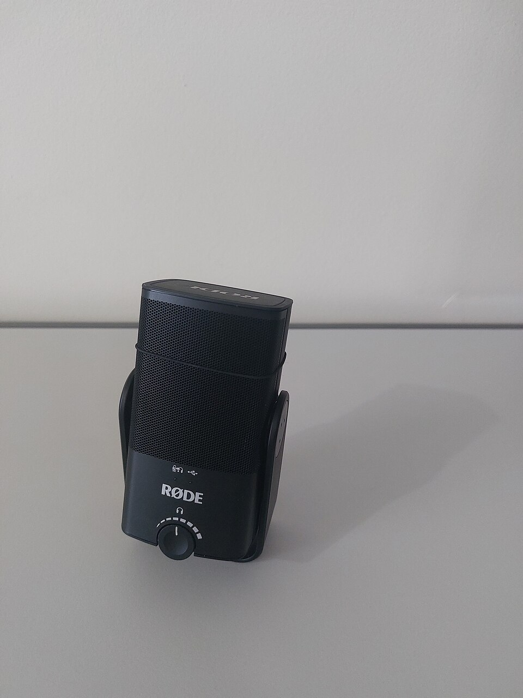
桌面收音设备；适合视频会议与个人录音。展示用测试商品；具体成色、配件、尺寸及功能以卖家验货信息为准。图片为同类实拍示意，不代表本件商品实物。
File:Rode NT-USB Mini microphone 003.jpg
查看图片来源 查看许可 44b9d101-7e19-445a-94f4-9f919ffb5d60桌面与移动端分辨率壁纸文件。展示用测试商品；交付文件、格式、版本及授权范围以订单页面说明为准。图片仅作同类内容的视觉示意，不代表交付文件。
File:Amazing - Jalkhad Valley.jpg
查看图片来源 查看许可 bfd3282d-1da8-4571-be4f-96b67255aedb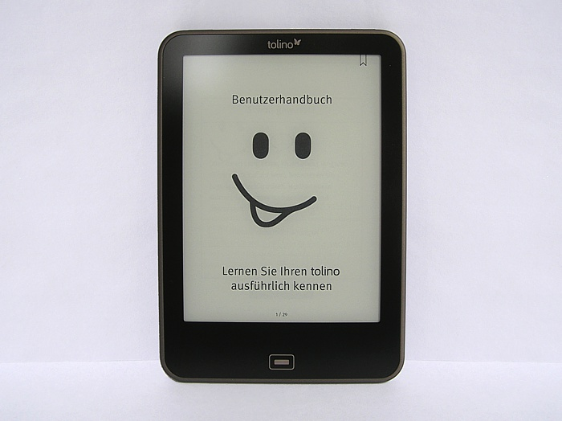
电子墨水屏阅读设备；账号及数字内容不随设备转移。展示用测试商品；具体成色、配件、尺寸及功能以卖家验货信息为准。图片为同类实拍示意，不代表本件商品实物。
File:EBook Reader Tolino Vision - Frontansicht.jpg
查看图片来源 查看许可 2fe22315-d1a4-49d3-9f71-862fba8245db
像素风飞船及特效元素。展示用测试商品；交付文件、格式、版本及授权范围以订单页面说明为准。图片仅作同类内容的视觉示意，不代表交付文件。
Kenney space-shooter-extension: preview.png
查看图片来源 查看许可 0792881e-147f-4ebb-b18c-c8e4530e856e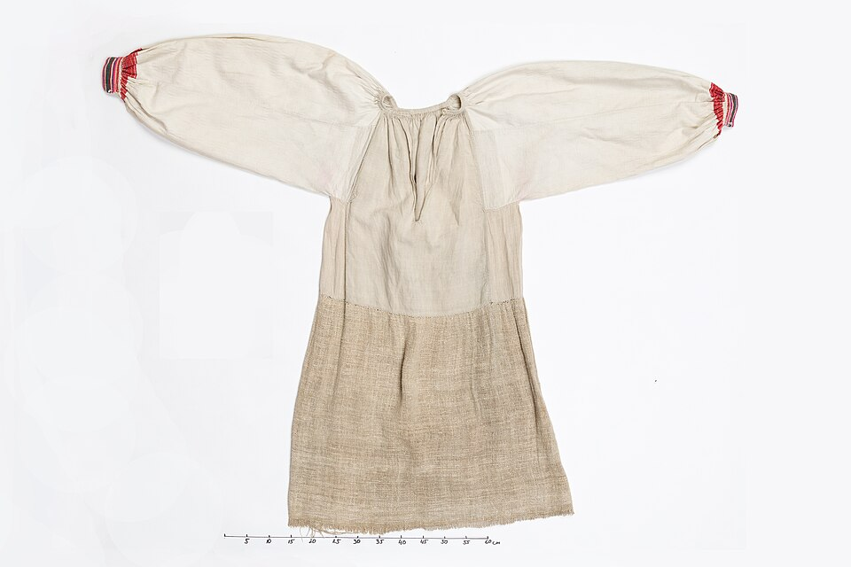
透气日常衬衫；尺码及色差以实物为准。展示用测试商品；具体成色、配件、尺寸及功能以卖家验货信息为准。图片为同类实拍示意，不代表本件商品实物。
File:Seto linen shirt (Saatse Museum).jpg
查看图片来源 查看许可 07e2f17f-67d2-4cc4-8372-146cb3530720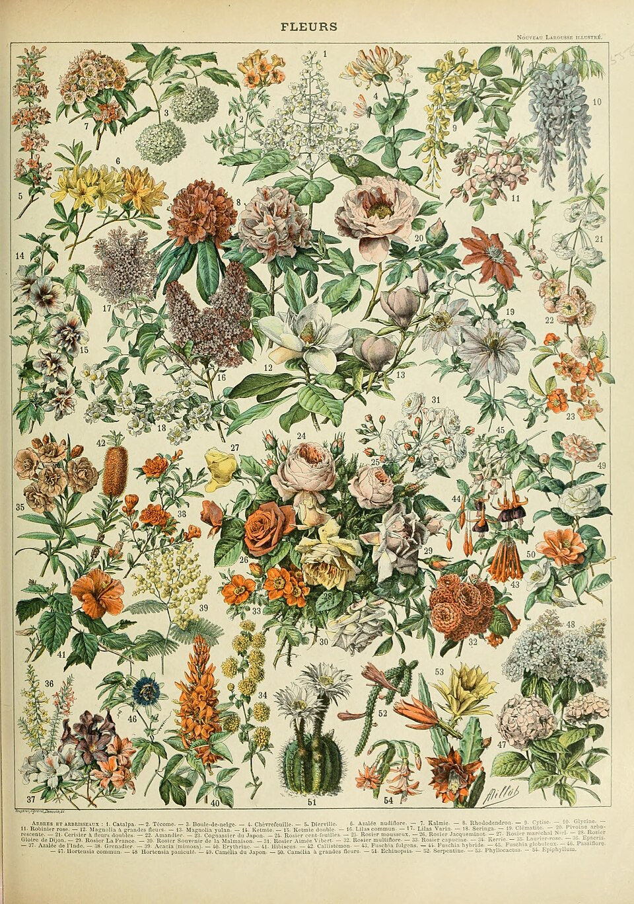
适合包装和网页配图的植物元素。展示用测试商品；交付文件、格式、版本及授权范围以订单页面说明为准。图片仅作同类内容的视觉示意，不代表交付文件。
File:Adolphe Millot fleurs C.jpg
查看图片来源 6f61645d-459a-439e-8cf4-7ac2ba27e6b4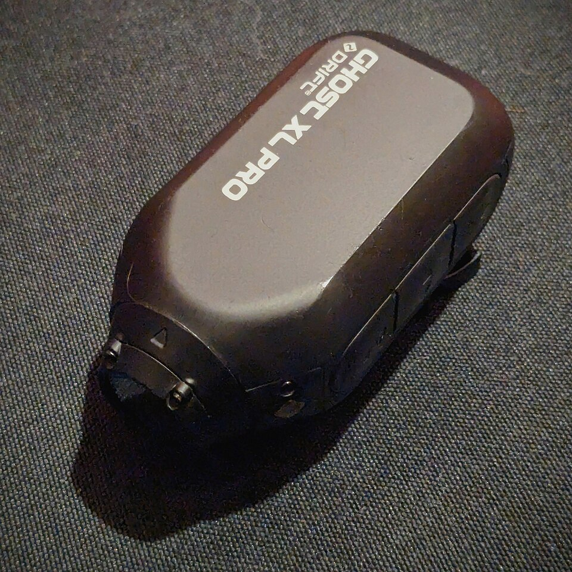
便携拍摄设备；支架、电池和防水配件以清单为准。展示用测试商品；具体成色、配件、尺寸及功能以卖家验货信息为准。图片为同类实拍示意，不代表本件商品实物。
File:Drift Ghost XL Pro Action Camera.jpg
查看图片来源 查看许可 a0dd9aa1-e845-4513-9892-34b321ca6879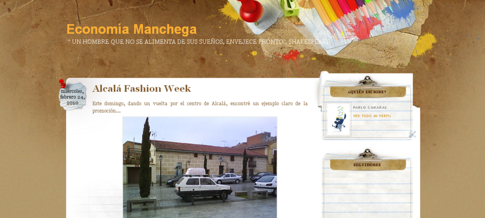
文章编辑、标签和列表页面示例。展示用测试商品；交付文件、格式、版本及授权范围以订单页面说明为准。图片仅作同类内容的视觉示意，不代表交付文件。
File:Blog2.png
查看图片来源 查看许可 af6c533a-e061-4f41-9230-527c5b0a144b双摇杆控制器；购买前确认平台兼容性。展示用测试商品；具体成色、配件、尺寸及功能以卖家验货信息为准。图片为同类实拍示意，不代表本件商品实物。
File:Xbox-360-Wireless-Controller-White.jpg
查看图片来源 17b35f76-397b-489f-8c9d-7ea4f3bca48b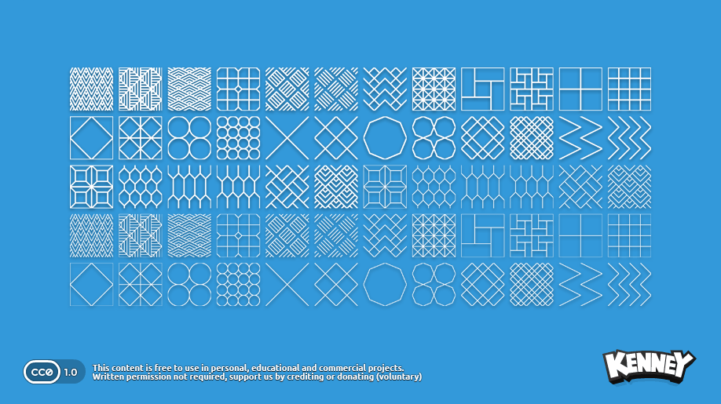
重复纹理背景；适合网页和海报设计。展示用测试商品；交付文件、格式、版本及授权范围以订单页面说明为准。图片仅作同类内容的视觉示意，不代表交付文件。
Kenney pattern-pack-lines: preview.png
查看图片来源 查看许可 7fbb52a8-d004-49be-a8df-fba131a8fdef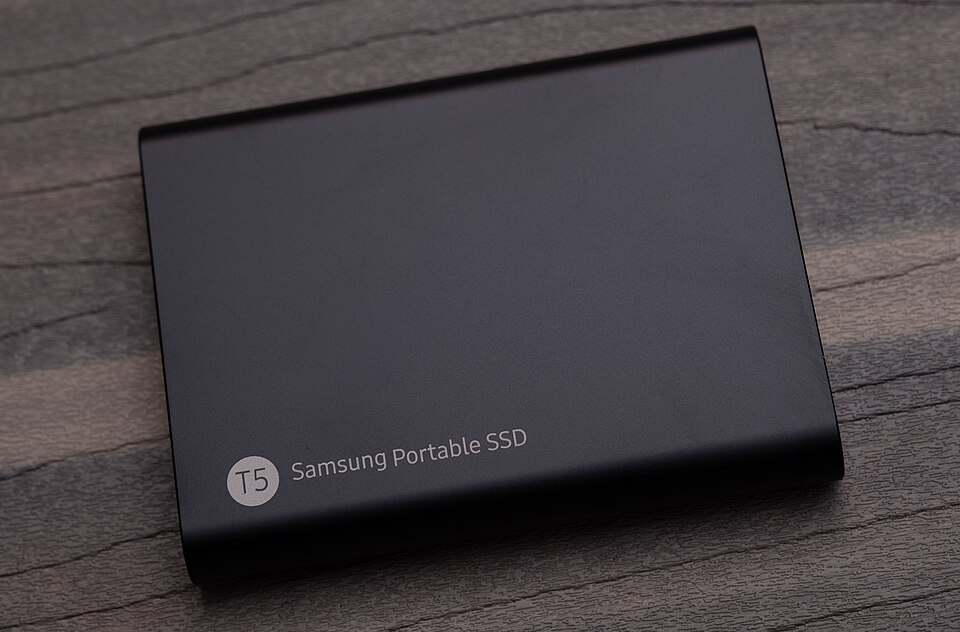
USB 外置存储设备；容量和健康度以实测为准。展示用测试商品；具体成色、配件、尺寸及功能以卖家验货信息为准。图片为同类实拍示意，不代表本件商品实物。
File:Samsung T5 Portable External SSD (Solid State Drive) (43544308485).jpg
查看图片来源 查看许可 cbe88f9b-c2bd-4094-8dbd-b621d6732bcd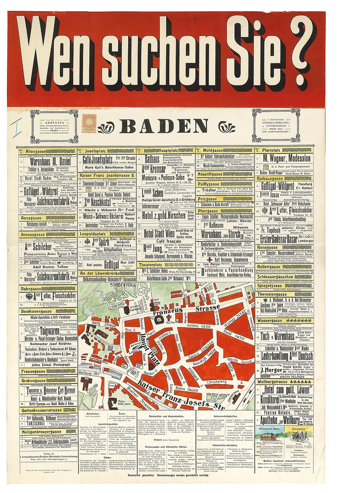
可编辑标题、留白和装饰版式。展示用测试商品；交付文件、格式、版本及授权范围以订单页面说明为准。图片仅作同类内容的视觉示意，不代表交付文件。
File:Baden bei Wien Plakat Wen suchen Sie c1900s.jpg
查看图片来源 92eaaedd-3a93-4fac-8e7e-b36a1acdcb44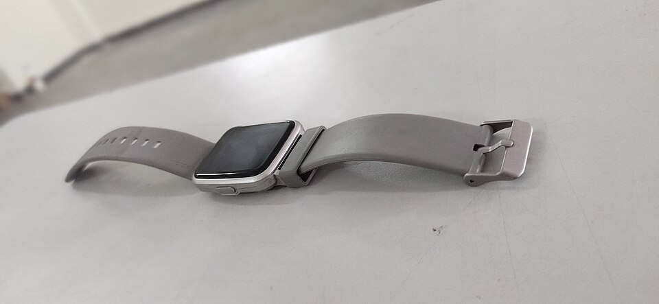
腕戴设备；配对前需确认可解除原账号绑定。展示用测试商品；具体成色、配件、尺寸及功能以卖家验货信息为准。图片为同类实拍示意，不代表本件商品实物。
File:Grey Smart Watch.jpg
查看图片来源 查看许可 a4f91b60-8201-449f-9acc-d32e460942f7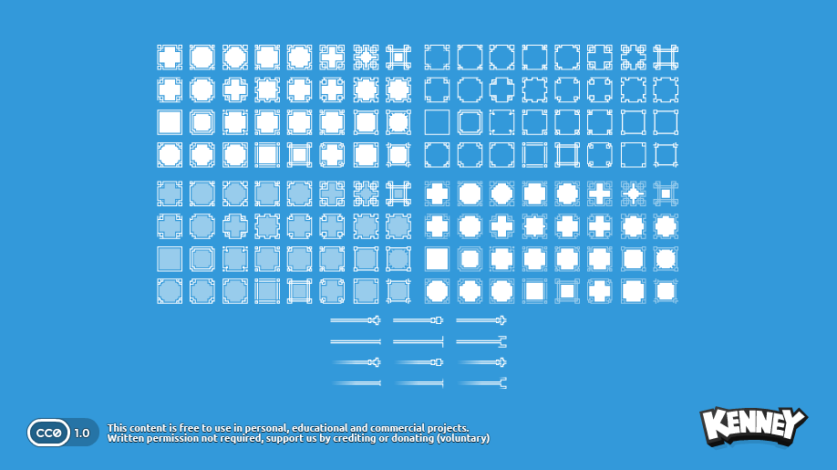
卡牌边框与信息栏版式示例。展示用测试商品；交付文件、格式、版本及授权范围以订单页面说明为准。图片仅作同类内容的视觉示意，不代表交付文件。
Kenney fantasy-ui-borders: preview.png
查看图片来源 查看许可 a5c95eea-907f-44b4-9356-5eb255502a08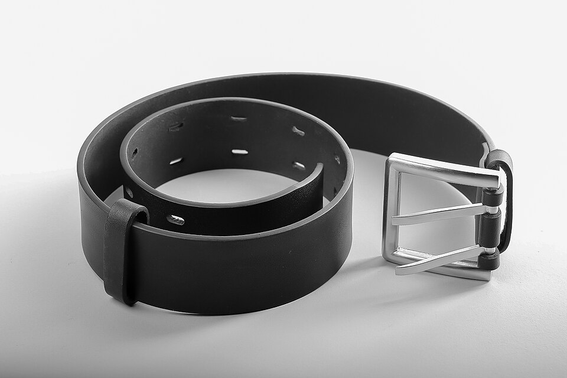
日常穿搭配件；长度和扣头磨损需确认。展示用测试商品；具体成色、配件、尺寸及功能以卖家验货信息为准。图片为同类实拍示意，不代表本件商品实物。
File:Germany Belt-and-Buckle-02.jpg
查看图片来源 查看许可 6edde539-e0c8-419e-8b4b-c705eeb80d7c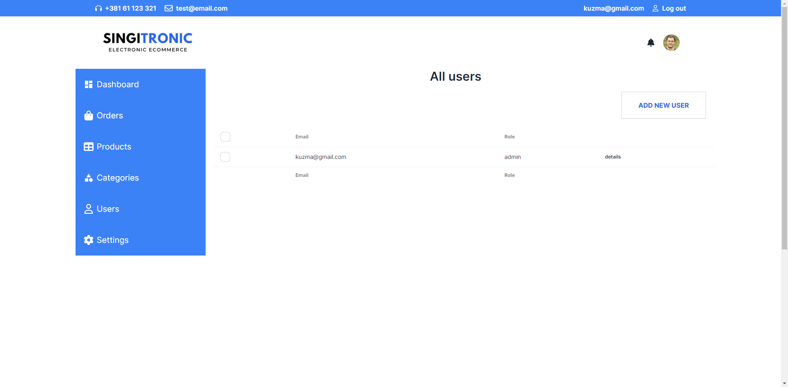
数据卡片、导航和筛选组件设计稿。展示用测试商品；交付文件、格式、版本及授权范围以订单页面说明为准。图片仅作同类内容的视觉示意，不代表交付文件。
Admin dashboard - All users page — project README
查看图片来源 查看许可 074a5aaf-8808-4dc6-b3e0-f683c2b8e20a触控平板；容量、系统和电池状态请以卖家检测为准。展示用测试商品；具体成色、配件、尺寸及功能以卖家验货信息为准。图片为同类实拍示意，不代表本件商品实物。
File:Tablet computer.jpg
查看图片来源 查看许可 907a6f79-cf71-4fa8-9f0b-b68d68b86d6a工单列表、详情和状态流转示例。展示用测试商品；交付文件、格式、版本及授权范围以订单页面说明为准。图片仅作同类内容的视觉示意，不代表交付文件。
File:Zammad-dashboard.png
查看图片来源 查看许可 63d7921e-fcbf-4f79-a7bc-40bbcd27aa62可折叠摄影支架；承重及云台接口购买前确认。展示用测试商品；具体成色、配件、尺寸及功能以卖家验货信息为准。图片为同类实拍示意，不代表本件商品实物。
File:Manfrotto tripod heads 804RC2.jpg
查看图片来源 查看许可 a9a941f1-538a-4804-9562-9f4915144871适合咖啡馆和简餐品牌的菜单版式。展示用测试商品；交付文件、格式、版本及授权范围以订单页面说明为准。图片仅作同类内容的视觉示意，不代表交付文件。
File:A Hong Kong style restaurant menus.jpg
查看图片来源 查看许可 e15b31df-90fd-4461-a59e-57f088d898d2适合视频会议、产品摄影与桌面补光。展示用测试商品；具体成色、配件、尺寸及功能以卖家验货信息为准。图片为同类实拍示意，不代表本件商品实物。
File:Himanshu Rastogi is wearing a ring light around his neck.jpg
查看图片来源 查看许可 99690324-e595-4019-b005-45d1d940ee66线路与站点信息展示模板。展示用测试商品；交付文件、格式、版本及授权范围以订单页面说明为准。图片仅作同类内容的视觉示意，不代表交付文件。
File:Mapa da Madeira, 1914.jpg
查看图片来源 88fb7c1e-0ddc-4ac4-adb0-3d788e7c63ed桌面充电配件；兼容标准和充电器另行核对。展示用测试商品；具体成色、配件、尺寸及功能以卖家验货信息为准。图片为同类实拍示意，不代表本件商品实物。
File:Wireless Charging Pad 2018.jpg
查看图片来源 查看许可 baaa92b2-1ae9-4bc5-a593-d54e5343eca6角色头像、状态栏与操作区域版式。展示用测试商品；交付文件、格式、版本及授权范围以订单页面说明为准。图片仅作同类内容的视觉示意，不代表交付文件。
Kenney ui-pack-rpg-expansion: preview.png
查看图片来源 查看许可 42efee80-8391-406d-b972-c27c983d7a53通勤背包；容量、拉链和背带状态请核对。展示用测试商品；具体成色、配件、尺寸及功能以卖家验货信息为准。图片为同类实拍示意，不代表本件商品实物。
File:Backpack (AM 650840).jpg
查看图片来源 查看许可 9550e33a-af47-4f54-ac5c-2217016f3d4a用于页面横幅与演示封面的渐变素材。展示用测试商品；交付文件、格式、版本及授权范围以订单页面说明为准。图片仅作同类内容的视觉示意，不代表交付文件。
File:Color gradient example 2.png
查看图片来源 查看许可 4326bd3d-2181-4e51-acf5-daa965c85f98双声道桌面扬声器；连接方式以卖家清单为准。展示用测试商品；具体成色、配件、尺寸及功能以卖家验货信息为准。图片为同类实拍示意，不代表本件商品实物。
File:Bose Computer MusicMonitor.jpg
查看图片来源 查看许可 6ebfb550-2082-4f13-aa05-501d7b773390课程目录与学习进度显示示例。展示用测试商品；交付文件、格式、版本及授权范围以订单页面说明为准。图片仅作同类内容的视觉示意，不代表交付文件。
File:Lista-cursos-moodle.png
查看图片来源 查看许可 61a2f83e-aac0-4ca8-8709-62f929e376b2小型家用投影设备；亮度和接口需实物确认。展示用测试商品；具体成色、配件、尺寸及功能以卖家验货信息为准。图片为同类实拍示意，不代表本件商品实物。
File:AAXATech P1 Pico Projector 2009.jpg
查看图片来源 查看许可 f6cb2f2a-1176-4092-8c29-e7fe538f443c适合页面横幅与商品展示的不同背景图参考。展示用测试商品；交付文件、格式、版本及授权范围以订单页面说明为准。图片仅作同类内容的视觉示意，不代表交付文件。
File:Background 1.jpg
查看图片来源 查看许可 73cb6b91-d56f-4d50-b888-e4d95a048580适合像素风地牢游戏的道具图标素材。展示用测试商品；交付文件、格式、版本及授权范围以订单页面说明为准。图片仅作同类内容的视觉示意，不代表交付文件。
Kenney roguelike-rpg-pack: sample1.png
查看图片来源 查看许可 241ff572-88ef-4c02-9216-c547196534e9包含任务列表、筛选和状态管理示例；部署环境需自行配置。展示用测试商品；交付文件、格式、版本及授权范围以订单页面说明为准。图片仅作同类内容的视觉示意，不代表交付文件。
File:2019-06-19 OpenProject by Benoit Soubeyran.png
查看图片来源 查看许可 b896896a-7fe0-4235-a0d1-c8e63b66e7e7
游戏角色帧素材；需按所附授权范围使用。展示用测试商品；交付文件、格式、版本及授权范围以订单页面说明为准。图片仅作同类内容的视觉示意，不代表交付文件。
Kenney pixel-platformer: sampleb.png
查看图片来源 查看许可 38f4670b-faa5-41eb-8ced-1383861a21c8用于演示和视觉稿的等距建筑插画。展示用测试商品；交付文件、格式、版本及授权范围以订单页面说明为准。图片仅作同类内容的视觉示意，不代表交付文件。
Kenney city-kit-commercial: sample.png
查看图片来源 查看许可 cd379def-6d85-48dc-bd67-913bca77eaef包含多种主题的信息图和统计图表版式参考。展示用测试商品；交付文件、格式、版本及授权范围以订单页面说明为准。图片仅作同类内容的视觉示意，不代表交付文件。
File:1838 Perthes Chart of the Rhine, Elbe, and Order Rivers - Geographicus - RheinElbeOder-perthes-1838.jpg
查看图片来源 49e7a27e-a31c-46a9-bb43-5e6d3e364f33骰子造型与桌游界面配图素材。展示用测试商品；交付文件、格式、版本及授权范围以订单页面说明为准。图片仅作同类内容的视觉示意，不代表交付文件。
Kenney playing-cards-pack: preview-a.png
查看图片来源 查看许可 1082b4ce-aa72-4669-99c9-7f1649d46953日期选择和预约时段的前端实现示例。展示用测试商品；交付文件、格式、版本及授权范围以订单页面说明为准。图片仅作同类内容的视觉示意，不代表交付文件。
File:GNOME Calendar 47.png
查看图片来源 查看许可 93f38c53-48c0-44c0-8d43-2865dd38cd62可编辑标题、留白和装饰版式。展示用测试商品；交付文件、格式、版本及授权范围以订单页面说明为准。图片仅作同类内容的视觉示意，不代表交付文件。
File:Marya Delvard - Plakat von Paul Haase.jpeg
查看图片来源 1f6f8e6d-2304-49a2-a26a-5e827f13c684数据卡片、导航和筛选组件设计稿。展示用测试商品；交付文件、格式、版本及授权范围以订单页面说明为准。图片仅作同类内容的视觉示意，不代表交付文件。
File:Well Organized Dashboard Example.jpg
查看图片来源 查看许可 5de7a82f-04ff-43a7-95e4-90a785b844b8适合咖啡馆和简餐品牌的菜单版式。展示用测试商品；交付文件、格式、版本及授权范围以订单页面说明为准。图片仅作同类内容的视觉示意，不代表交付文件。
File:20190313 122828 Menu card.jpg
查看图片来源 查看许可 18793954-bd84-4d82-aede-df2fd5bc8bf2生命、护盾和能量等状态图标。展示用测试商品；交付文件、格式、版本及授权范围以订单页面说明为准。图片仅作同类内容的视觉示意，不代表交付文件。
Kenney board-game-info: preview.png
查看图片来源 查看许可 54f602b0-8198-4fe0-ae60-764d42c6409b常见统计卡片与图表页面示例。展示用测试商品；交付文件、格式、版本及授权范围以订单页面说明为准。图片仅作同类内容的视觉示意，不代表交付文件。
File:Grafana dashboard (2016).png
查看图片来源 查看许可 146eeed2-5b34-4ca7-a512-2aee0722204e
包含不同控制器与键鼠的输入提示图标；交付格式以清单为准。展示用测试商品；交付文件、格式、版本及授权范围以订单页面说明为准。图片仅作同类内容的视觉示意，不代表交付文件。
Kenney input-prompts: preview-nintendo-switch.png
查看图片来源 查看许可 d27e85b2-b5c6-4566-b484-04ecb5738041商品列表与详情卡片布局素材；可用于界面原型。展示用测试商品；交付文件、格式、版本及授权范围以订单页面说明为准。图片仅作同类内容的视觉示意，不代表交付文件。
Single product page — project README
查看图片来源 查看许可 043a37bf-eb1b-4bce-9eb7-cca71b900fd3适合图文账号展示社交媒体数据的图表版式参考。展示用测试商品；交付文件、格式、版本及授权范围以订单页面说明为准。图片仅作同类内容的视觉示意，不代表交付文件。
File:Importance of social media for different corporate functions.png
查看图片来源 查看许可 88525f4b-6302-4115-8b12-1f11e4c6cde4适合为笔记本扩展显示器和常用外设接口。展示用测试商品；具体成色、配件、尺寸及功能以卖家验货信息为准。图片为同类实拍示意，不代表本件商品实物。
File:USB-C dock - back.jpg
查看图片来源 查看许可 6b96e53e-875e-4cab-ac16-2d6cf0fbfa71游戏角色帧素材；需按所附授权范围使用。展示用测试商品；交付文件、格式、版本及授权范围以订单页面说明为准。图片仅作同类内容的视觉示意，不代表交付文件。
Kenney tiny-dungeon: preview.png
查看图片来源 查看许可 57f4ee86-c73c-4a06-81dd-72f77ed3255b
适合桌面办公与日常内容创作；尺寸和底座以卖家清单为准。展示用测试商品；具体成色、配件、尺寸及功能以卖家验货信息为准。图片为同类实拍示意，不代表本件商品实物。
File:Computer monitor screen image simulated.jpg
查看图片来源 查看许可 94dac291-cddf-4262-a46a-84209c828d26横向卷轴游戏场景背景示例。展示用测试商品；交付文件、格式、版本及授权范围以订单页面说明为准。图片仅作同类内容的视觉示意，不代表交付文件。
Kenney background-elements-remastered: sample.png
查看图片来源 查看许可 7e480ab5-d7c6-48cb-b073-8ec3bb9bc04d秋冬配饰；面料成分和尺寸以卖家标签为准。展示用测试商品；具体成色、配件、尺寸及功能以卖家验货信息为准。图片为同类实拍示意，不代表本件商品实物。
File:Knit cap and loop scarf set used to emphasize the arched eyebrows with bokee in the background.jpg
查看图片来源 查看许可 66d5f7b9-9e31-4bf0-88c1-de73698ba70d用于演示和视觉稿的等距建筑插画。展示用测试商品；交付文件、格式、版本及授权范围以订单页面说明为准。图片仅作同类内容的视觉示意，不代表交付文件。
Kenney city-kit-commercial: preview-variation-a.png
查看图片来源 查看许可 9d0847a9-88a0-4728-a2cb-8ea15bb9e4a5可更换镜头相机机身；镜头和存储卡另行确认。展示用测试商品；具体成色、配件、尺寸及功能以卖家验货信息为准。图片为同类实拍示意，不代表本件商品实物。
File:Mirrorless Kodak Brownie 127 camera.jpg
查看图片来源 查看许可 fab9a4df-968c-40f1-b3ec-4093756af90f商品网格、筛选和详情页交互示例。展示用测试商品；交付文件、格式、版本及授权范围以订单页面说明为准。图片仅作同类内容的视觉示意，不代表交付文件。
Checkout page — project README
查看图片来源 查看许可 464a4c4f-2e64-445e-aaef-92f24e798cc8适合人像及日常街拍；购买前需确认卡口。展示用测试商品；具体成色、配件、尺寸及功能以卖家验货信息为准。图片为同类实拍示意，不代表本件商品实物。
File:Lens Nikkor 50mm.jpg
查看图片来源 查看许可 020810bc-4fbd-40c5-853a-14f367012f24包含多种主题的信息图和统计图表版式参考。展示用测试商品；交付文件、格式、版本及授权范围以订单页面说明为准。图片仅作同类内容的视觉示意，不代表交付文件。
File:Golden hour graph.png
查看图片来源 d29c1181-e3fb-4603-8d71-ebe8014b7251桌面收音设备；适合视频会议与个人录音。展示用测试商品；具体成色、配件、尺寸及功能以卖家验货信息为准。图片为同类实拍示意，不代表本件商品实物。
File:Rode NT-USB Mini microphone 001.jpg
查看图片来源 查看许可 d410444d-2b55-4bef-92aa-d1bc5ef17123桌面与移动端分辨率壁纸文件。展示用测试商品；交付文件、格式、版本及授权范围以订单页面说明为准。图片仅作同类内容的视觉示意，不代表交付文件。
File:Arang Kel - Neelum Valley.jpg
查看图片来源 查看许可 3dcd3dea-ece0-46c9-90de-823b87195150电子墨水屏阅读设备；账号及数字内容不随设备转移。展示用测试商品；具体成色、配件、尺寸及功能以卖家验货信息为准。图片为同类实拍示意，不代表本件商品实物。
File:Ereader.jpg
查看图片来源 查看许可 618e90b3-aa6e-4831-b2db-bbd7081080a9像素风飞船及特效元素。展示用测试商品；交付文件、格式、版本及授权范围以订单页面说明为准。图片仅作同类内容的视觉示意，不代表交付文件。
Kenney space-shooter-extension: sample.png
查看图片来源 查看许可 4fe8f6df-7e7c-49cc-b51e-4c5c83fca2a6透气日常衬衫；尺码及色差以实物为准。展示用测试商品；具体成色、配件、尺寸及功能以卖家验货信息为准。图片为同类实拍示意，不代表本件商品实物。
File:White linen shirt - DPLA - 98a0086f55b5e7cbbdc779ee97df5beb (page 2).jpg
查看图片来源 2f0b458d-a66e-435b-a171-ffe0d8982269适合包装和网页配图的植物元素。展示用测试商品；交付文件、格式、版本及授权范围以订单页面说明为准。图片仅作同类内容的视觉示意，不代表交付文件。
File:Adolphe Millot fleurs B.jpg
查看图片来源 6041331e-b019-43db-9e48-6c81604b6ea5便携拍摄设备；支架、电池和防水配件以清单为准。展示用测试商品；具体成色、配件、尺寸及功能以卖家验货信息为准。图片为同类实拍示意，不代表本件商品实物。
File:GoPro Hero 8 Black and Hero 11 Black.JPG
查看图片来源 查看许可 b8d44d1a-11f8-4638-a05f-9495efea2580文章编辑、标签和列表页面示例。展示用测试商品；交付文件、格式、版本及授权范围以订单页面说明为准。图片仅作同类内容的视觉示意，不代表交付文件。
File:WordPress Administration 34 ja.png
查看图片来源 查看许可 fadbeb33-0f9e-4cc4-a6cf-73ef3124be0f双摇杆控制器；购买前确认平台兼容性。展示用测试商品；具体成色、配件、尺寸及功能以卖家验货信息为准。图片为同类实拍示意，不代表本件商品实物。
File:Nintendo-Switch-Pro-Controller-FL.jpg
查看图片来源 b45b1275-9ce0-4eab-b573-2873c093cee4重复纹理背景；适合网页和海报设计。展示用测试商品；交付文件、格式、版本及授权范围以订单页面说明为准。图片仅作同类内容的视觉示意，不代表交付文件。
Kenney pattern-pack-pixel: preview.png
查看图片来源 查看许可 b0feb827-720d-4107-97a2-7edfc999e283USB 外置存储设备；容量和健康度以实测为准。展示用测试商品；具体成色、配件、尺寸及功能以卖家验货信息为准。图片为同类实拍示意，不代表本件商品实物。
File:Raspberry-Pi-SSD-Feature.jpg
查看图片来源 查看许可 8cb29a43-bd82-466e-8437-62edb3148757可编辑标题、留白和装饰版式。展示用测试商品；交付文件、格式、版本及授权范围以订单页面说明为准。图片仅作同类内容的视觉示意，不代表交付文件。
File:Poster saying Good old union jack - goodbye (I0011726).jpg
查看图片来源 d3bb8e33-c280-4db6-a8ff-5007d99f0fa4腕戴设备；配对前需确认可解除原账号绑定。展示用测试商品；具体成色、配件、尺寸及功能以卖家验货信息为准。图片为同类实拍示意，不代表本件商品实物。
File:Smart Watches.png
查看图片来源 608aee22-d2f8-4b48-9b62-ce363cbee8a1卡牌边框与信息栏版式示例。展示用测试商品；交付文件、格式、版本及授权范围以订单页面说明为准。图片仅作同类内容的视觉示意，不代表交付文件。
Kenney fantasy-ui-borders: sample.png
查看图片来源 查看许可 af706ed6-b882-41fb-9adc-4e5e0f55b82f日常穿搭配件；长度和扣头磨损需确认。展示用测试商品；具体成色、配件、尺寸及功能以卖家验货信息为准。图片为同类实拍示意，不代表本件商品实物。
File:Belt-clothing.jpg
查看图片来源 4c04e0b9-79c7-4b66-90e6-65021bd5be01数据卡片、导航和筛选组件设计稿。展示用测试商品；交付文件、格式、版本及授权范围以订单页面说明为准。图片仅作同类内容的视觉示意，不代表交付文件。
File:Discovery Dashboards - Search Metrics - Language & Project Breakdown.png
查看图片来源 查看许可 9160c119-ff8c-4d34-b53c-b396b4642fd0触控平板；容量、系统和电池状态请以卖家检测为准。展示用测试商品；具体成色、配件、尺寸及功能以卖家验货信息为准。图片为同类实拍示意，不代表本件商品实物。
File:Toshiba Portege 3500 Tablet PC.JPG
查看图片来源 查看许可 6775afb7-eb42-4c01-a640-7edb06debfcf工单列表、详情和状态流转示例。展示用测试商品；交付文件、格式、版本及授权范围以订单页面说明为准。图片仅作同类内容的视觉示意，不代表交付文件。
File:Ticket zoom with text module.png
查看图片来源 查看许可 c968f31c-ab8c-4ed0-80fe-5e43249fb8b9可折叠摄影支架；承重及云台接口购买前确认。展示用测试商品；具体成色、配件、尺寸及功能以卖家验货信息为准。图片为同类实拍示意，不代表本件商品实物。
File:Gitzo 1541T Traveler Carbon Fiber Tripod Collage Horizontal.jpg
查看图片来源 查看许可 b03d5794-7d98-470a-9fd3-74f6321df986适合咖啡馆和简餐品牌的菜单版式。展示用测试商品；交付文件、格式、版本及授权范围以订单页面说明为准。图片仅作同类内容的视觉示意，不代表交付文件。
File:A black menu board from Kau Yee Hong Kong style restaurant.jpg
查看图片来源 查看许可 47927aa8-aa07-405a-977e-2ace5e013916适合视频会议、产品摄影与桌面补光。展示用测试商品；具体成色、配件、尺寸及功能以卖家验货信息为准。图片为同类实拍示意，不代表本件商品实物。
File:Ring light in Torp shopping mall, Uddevalla.jpg
查看图片来源 查看许可 f24e728a-4c38-4134-b387-2c1f14d4d20a线路与站点信息展示模板。展示用测试商品；交付文件、格式、版本及授权范围以订单页面说明为准。图片仅作同类内容的视觉示意，不代表交付文件。
File:Washington DC Tourist Map.jpg
查看图片来源 查看许可 b1fa84f0-4b75-42c8-9a11-c9b42e60f714桌面充电配件；兼容标准和充电器另行核对。展示用测试商品；具体成色、配件、尺寸及功能以卖家验货信息为准。图片为同类实拍示意，不代表本件商品实物。
File:Wireless charging pad on CR400BF-C-5145 (20191230111849).jpg
查看图片来源 查看许可 6d54722d-d6d8-4aff-8c69-de4796d9f50c角色头像、状态栏与操作区域版式。展示用测试商品；交付文件、格式、版本及授权范围以订单页面说明为准。图片仅作同类内容的视觉示意，不代表交付文件。
Kenney ui-pack-rpg-expansion: sample.png
查看图片来源 查看许可 9b8b4672-a768-436f-b7be-0b51049a690f通勤背包；容量、拉链和背带状态请核对。展示用测试商品；具体成色、配件、尺寸及功能以卖家验货信息为准。图片为同类实拍示意，不代表本件商品实物。
File:Backpack (AM 2014.66.1-1).jpg
查看图片来源 查看许可 9e6b0b47-8560-4740-9d93-2a89ddda30fc用于页面横幅与演示封面的渐变素材。展示用测试商品；交付文件、格式、版本及授权范围以订单页面说明为准。图片仅作同类内容的视觉示意，不代表交付文件。
File:3D RGB profile of cubehelix color gradient.png
查看图片来源 查看许可 288fcaef-5c43-4215-96eb-c110c00ae3a4双声道桌面扬声器；连接方式以卖家清单为准。展示用测试商品；具体成色、配件、尺寸及功能以卖家验货信息为准。图片为同类实拍示意，不代表本件商品实物。
File:Creative T4 Wireless 2.1 Speakers.jpg
查看图片来源 查看许可 8d2b1961-aaaa-4bf6-a976-5bd82afd5545课程目录与学习进度显示示例。展示用测试商品；交付文件、格式、版本及授权范围以订单页面说明为准。图片仅作同类内容的视觉示意，不代表交付文件。
File:Ejemplo estado de finalización Moodle.png
查看图片来源 查看许可 36489937-3771-4b07-a945-e0b689b4d3cf小型家用投影设备；亮度和接口需实物确认。展示用测试商品；具体成色、配件、尺寸及功能以卖家验货信息为准。图片为同类实拍示意，不代表本件商品实物。
File:Sony Portable Ultra Short Throw Projector (26089157293).jpg
查看图片来源 查看许可 043a971b-f011-4b48-a05a-80de5a5cb78a适合页面横幅与商品展示的不同背景图参考。展示用测试商品；交付文件、格式、版本及授权范围以订单页面说明为准。图片仅作同类内容的视觉示意，不代表交付文件。
File:Background pic.jpg
查看图片来源 查看许可 7f47bc28-1943-4d6c-ae1f-811843957b5a蓝牙连接；头梁与耳罩完整，适合通勤及居家聆听。展示用测试商品；具体成色、配件、尺寸及功能以卖家验货信息为准。图片为同类实拍示意，不代表本件商品实物。
File:Sennheiser RS 175 wireless headphone + station 2,44 ghz.jpg
查看图片来源 查看许可 730c6083-2594-4440-b7a8-d36d1a6a83d8包含不同控制器与键鼠的输入提示图标；交付格式以清单为准。展示用测试商品；交付文件、格式、版本及授权范围以订单页面说明为准。图片仅作同类内容的视觉示意，不代表交付文件。
Kenney input-prompts: preview-nintendo-switch-2.png
查看图片来源 查看许可 3dca6a51-d38d-448a-8143-49f7dcf81495便携机身；适合书桌、旅行与小型聚会。展示用测试商品；具体成色、配件、尺寸及功能以卖家验货信息为准。图片为同类实拍示意，不代表本件商品实物。
File:UE Boom speakers.jpg
查看图片来源 查看许可 1e04c275-677d-4748-9b62-c882808bcb47适合像素风地牢游戏的道具图标素材。展示用测试商品；交付文件、格式、版本及授权范围以订单页面说明为准。图片仅作同类内容的视觉示意，不代表交付文件。
Kenney roguelike-rpg-pack: sample2.png
查看图片来源 查看许可 9e43860a-36cf-4473-8b48-aa9cc145b356日常休闲外套；肩宽、衣长和磨损处请核对实测。展示用测试商品；具体成色、配件、尺寸及功能以卖家验货信息为准。图片为同类实拍示意，不代表本件商品实物。
File:Denim jacket from Dolce & Gabbana with human skull on back made from Swarovski glass crystals.jpg
查看图片来源 查看许可 09b7dfd6-0134-4708-bdca-98f56566e5ae商品列表与详情卡片布局素材；可用于界面原型。展示用测试商品；交付文件、格式、版本及授权范围以订单页面说明为准。图片仅作同类内容的视觉示意，不代表交付文件。
Search page — project README
查看图片来源 查看许可 8fa6ceaf-8fe6-41dd-9c86-6564c7446773有线连接；独立键帽与标准键位布局。展示用测试商品；具体成色、配件、尺寸及功能以卖家验货信息为准。图片为同类实拍示意，不代表本件商品实物。
File:Mechanical keyboard example.jpg
查看图片来源 查看许可 54057d8f-a851-4308-8e0a-502aa1c9cd62包含任务列表、筛选和状态管理示例；部署环境需自行配置。展示用测试商品；交付文件、格式、版本及授权范围以订单页面说明为准。图片仅作同类内容的视觉示意，不代表交付文件。
File:Openproject kanban.PNG
查看图片来源 查看许可 84272d7c-4cb4-4776-959c-e7bb26980053轻量化机身；适合笔记本和日常办公。展示用测试商品；具体成色、配件、尺寸及功能以卖家验货信息为准。图片为同类实拍示意，不代表本件商品实物。
File:A wireless computer mouse.jpg
查看图片来源 查看许可 49bff1da-cd8c-4542-8f48-2661d0509d0c适合图文账号展示社交媒体数据的图表版式参考。展示用测试商品；交付文件、格式、版本及授权范围以订单页面说明为准。图片仅作同类内容的视觉示意，不代表交付文件。
File:Social Media Llano.jpg
查看图片来源 查看许可 f3aa8b61-453e-45cc-b64d-5f064c89d2c1适合为笔记本扩展显示器和常用外设接口。展示用测试商品；具体成色、配件、尺寸及功能以卖家验货信息为准。图片为同类实拍示意，不代表本件商品实物。
File:USB-C dock front.jpg
查看图片来源 查看许可 541f73eb-db81-4cff-817d-3fd6cfbaa8e1
游戏角色帧素材；需按所附授权范围使用。展示用测试商品；交付文件、格式、版本及授权范围以订单页面说明为准。图片仅作同类内容的视觉示意，不代表交付文件。
Kenney tiny-dungeon: sample.png
查看图片来源 查看许可 f6fbf8b8-d0d4-415f-a8dc-2b223e90c5a8适合桌面办公与日常内容创作；尺寸和底座以卖家清单为准。展示用测试商品；具体成色、配件、尺寸及功能以卖家验货信息为准。图片为同类实拍示意，不代表本件商品实物。
File:Atari 800 XL home computer with monitor and tape program recorder XC12.jpg
查看图片来源 查看许可 3fc9603e-fc9b-47c2-ab6c-ce9fa78b2044草地、道路和建筑图块示例。展示用测试商品；交付文件、格式、版本及授权范围以订单页面说明为准。图片仅作同类内容的视觉示意，不代表交付文件。
Kenney roguelike-caves-dungeons: sample.png
查看图片来源 查看许可 34d806dd-3762-4833-8205-a866a2ccafe6日常通勤手提包；尺寸与内袋以实物为准。展示用测试商品；具体成色、配件、尺寸及功能以卖家验货信息为准。图片为同类实拍示意，不代表本件商品实物。
File:Canvas tote bag from Books & Books, Miami, Florida, USA - 20130912.jpg
查看图片来源 查看许可 a3bda326-f044-4010-8398-f6a83159490e用于演示和视觉稿的等距建筑插画。展示用测试商品；交付文件、格式、版本及授权范围以订单页面说明为准。图片仅作同类内容的视觉示意，不代表交付文件。
Kenney city-kit-commercial: preview-variation-b.png
查看图片来源 查看许可 baf04bab-7dc5-4493-94b7-ec589b09fa1c可更换镜头相机机身；镜头和存储卡另行确认。展示用测试商品；具体成色、配件、尺寸及功能以卖家验货信息为准。图片为同类实拍示意，不代表本件商品实物。
File:Sony A 7 iii full frame mirrorless camera.jpg
查看图片来源 查看许可 4cf04740-16e3-47d6-af2d-e3db2776d96c商品、库存与报表页面示例；不含真实业务数据。展示用测试商品；交付文件、格式、版本及授权范围以订单页面说明为准。图片仅作同类内容的视觉示意，不代表交付文件。
File:Erpnext-head-screenshot.jpg
查看图片来源 查看许可 06aa7e62-51cf-47bb-9acd-9429d04b4a8a适合人像及日常街拍；购买前需确认卡口。展示用测试商品；具体成色、配件、尺寸及功能以卖家验货信息为准。图片为同类实拍示意，不代表本件商品实物。
File:Photographic lenses and tubes 2025.jpg
查看图片来源 查看许可 68f9d07a-dd08-4ca0-9a87-f3e1d34c8a21包含多种主题的信息图和统计图表版式参考。展示用测试商品；交付文件、格式、版本及授权范围以订单页面说明为准。图片仅作同类内容的视觉示意，不代表交付文件。
File:Golden hour graph ru.png
查看图片来源 6ef8a9c1-7ec9-497c-b208-3107fa94b108桌面收音设备；适合视频会议与个人录音。展示用测试商品；具体成色、配件、尺寸及功能以卖家验货信息为准。图片为同类实拍示意，不代表本件商品实物。
File:Rode NT-USB Mini microphone 002.jpg
查看图片来源 查看许可 55793adf-1741-4a05-b39c-f7f82d15339a桌面与移动端分辨率壁纸文件。展示用测试商品；交付文件、格式、版本及授权范围以订单页面说明为准。图片仅作同类内容的视觉示意，不代表交付文件。
File:Arang Kel Village - Neelum Valley.jpg
查看图片来源 查看许可 578c1259-100c-4ed8-9d9f-3f9b4547ab53电子墨水屏阅读设备；账号及数字内容不随设备转移。展示用测试商品；具体成色、配件、尺寸及功能以卖家验货信息为准。图片为同类实拍示意，不代表本件商品实物。
File:Kobo H20 e-reader.jpg
查看图片来源 查看许可 1780998b-f2ce-472f-be13-ea6ba6a624d2骰子造型与桌游界面配图素材。展示用测试商品；交付文件、格式、版本及授权范围以订单页面说明为准。图片仅作同类内容的视觉示意，不代表交付文件。
Kenney playing-cards-pack: preview-b.png
查看图片来源 查看许可 3e6bac7a-6df7-470a-97e1-07b15956b226秋冬叠穿单品；洗护和起球情况请确认。展示用测试商品；具体成色、配件、尺寸及功能以卖家验货信息为准。图片为同类实拍示意，不代表本件商品实物。
File:Swiss Army Wool Sweater (15695462777).jpg
查看图片来源 查看许可 baf05e85-dee4-482e-8e97-ef78f9562d05适合包装和网页配图的植物元素。展示用测试商品；交付文件、格式、版本及授权范围以订单页面说明为准。图片仅作同类内容的视觉示意，不代表交付文件。
File:Adolphe Millot fleurs D.jpg
查看图片来源 f5c4c241-3aab-4e93-987c-bc375a34927c便携拍摄设备；支架、电池和防水配件以清单为准。展示用测试商品；具体成色、配件、尺寸及功能以卖家验货信息为准。图片为同类实拍示意，不代表本件商品实物。
File:Action camera.jpg
查看图片来源 查看许可 0aaa17aa-2af8-4be7-a2ca-ba83c01cbbaf日期选择和预约时段的前端实现示例。展示用测试商品；交付文件、格式、版本及授权范围以订单页面说明为准。图片仅作同类内容的视觉示意，不代表交付文件。
File:Nextcloud 30.0.13 - Appointments - Wikimedia CH.png
查看图片来源 查看许可 dabdc347-636f-4c96-acef-5bdae2fb845b
双摇杆控制器；购买前确认平台兼容性。展示用测试商品；具体成色、配件、尺寸及功能以卖家验货信息为准。图片为同类实拍示意，不代表本件商品实物。
File:Xbox-360-Controller-Black.jpg
查看图片来源 cab313ed-b48a-4f8a-9d2d-39dc3858ba55重复纹理背景；适合网页和海报设计。展示用测试商品；交付文件、格式、版本及授权范围以订单页面说明为准。图片仅作同类内容的视觉示意，不代表交付文件。
Kenney pattern-pack-extra: preview.png
查看图片来源 查看许可 4cc90130-08b4-4fc4-be12-bb898ab662f6USB 外置存储设备；容量和健康度以实测为准。展示用测试商品；具体成色、配件、尺寸及功能以卖家验货信息为准。图片为同类实拍示意，不代表本件商品实物。
File:Raspberry-Pi-SSD-Feature (cropped) 512GB NVMe.jpg
查看图片来源 查看许可 200db1da-f519-4cc2-b1ec-6f9d955db545可编辑标题、留白和装饰版式。展示用测试商品；交付文件、格式、版本及授权范围以订单页面说明为准。图片仅作同类内容的视觉示意，不代表交付文件。
File:Wilhelm Gertz Piano-Fabrik Hannover Plakat ca. 1900.jpg
查看图片来源 b0153ce2-12d2-461a-b899-7ea9873c2cf7腕戴设备；配对前需确认可解除原账号绑定。展示用测试商品；具体成色、配件、尺寸及功能以卖家验货信息为准。图片为同类实拍示意，不代表本件商品实物。
File:Smartwatches.jpeg
查看图片来源 查看许可 03448cdd-f0fd-4259-942a-dfe168ddd047适合游戏原型的宝箱模型示例。展示用测试商品；交付文件、格式、版本及授权范围以订单页面说明为准。图片仅作同类内容的视觉示意，不代表交付文件。
Kenney mini-dungeon: sample.png
查看图片来源 查看许可 0b180c67-dbdd-42bc-ad3f-a876cf0a62b3小型随身包；皮面划痕及五金状态请核对。展示用测试商品；具体成色、配件、尺寸及功能以卖家验货信息为准。图片为同类实拍示意，不代表本件商品实物。
File:1970s maxi skirt in Liberty print, with tooled leather shoulder bag and black T-shirt (cropped).jpg
查看图片来源 查看许可 67786100-5573-4ab7-bc10-33f7fb40f576数据卡片、导航和筛选组件设计稿。展示用测试商品；交付文件、格式、版本及授权范围以订单页面说明为准。图片仅作同类内容的视觉示意，不代表交付文件。
File:Discovery Dashboards - Search Metrics - Monthly Metrics.png
查看图片来源 查看许可 eeecd38c-ade9-4279-bf26-4eb378f7e305触控平板；容量、系统和电池状态请以卖家检测为准。展示用测试商品；具体成色、配件、尺寸及功能以卖家验货信息为准。图片为同类实拍示意，不代表本件商品实物。
File:Tablet computer.jpeg
查看图片来源 查看许可 2a44b4f7-4931-4f3d-9912-b813ea44e6b7导航、搜索和文章页面布局示例。展示用测试商品；交付文件、格式、版本及授权范围以订单页面说明为准。图片仅作同类内容的视觉示意，不代表交付文件。
Docusaurus documentation: /docs/create-doc
查看图片来源 查看许可 d4cc4cbd-289c-498b-8bd8-712c750e91b7可折叠摄影支架；承重及云台接口购买前确认。展示用测试商品；具体成色、配件、尺寸及功能以卖家验货信息为准。图片为同类实拍示意，不代表本件商品实物。
File:Camera Zenit 11 on a tripod.jpg
查看图片来源 查看许可 b0a9e33a-c5d7-4fd6-bc0c-1571326efd1c适合咖啡馆和简餐品牌的菜单版式。展示用测试商品；交付文件、格式、版本及授权范围以订单页面说明为准。图片仅作同类内容的视觉示意，不代表交付文件。
File:A hand write menus in the round tables in yuen long.jpg
查看图片来源 查看许可 374f66f0-2d2e-492c-a2d2-5336d479901d适合视频会议、产品摄影与桌面补光。展示用测试商品；具体成色、配件、尺寸及功能以卖家验货信息为准。图片为同类实拍示意，不代表本件商品实物。
File:Digitalização Tridimensional - Iluminação Ring Light.jpg
查看图片来源 查看许可 ccd79eda-b248-4851-9b57-0fc6d03c053c线路与站点信息展示模板。展示用测试商品；交付文件、格式、版本及授权范围以订单页面说明为准。图片仅作同类内容的视觉示意，不代表交付文件。
File:Turisticke znacky na kreslenej mape.png
查看图片来源 查看许可 fb608500-601e-44a0-a328-a92e31f065a3桌面充电配件；兼容标准和充电器另行核对。展示用测试商品；具体成色、配件、尺寸及功能以卖家验货信息为准。图片为同类实拍示意，不代表本件商品实物。
File:Car 1 wireless charging pad of CR400AF-AS-2483 (20260412202742).jpg
查看图片来源 查看许可 efa80200-befa-4f6e-9439-9aaa5d77e2d5
生命、护盾和能量等状态图标。展示用测试商品；交付文件、格式、版本及授权范围以订单页面说明为准。图片仅作同类内容的视觉示意，不代表交付文件。
Kenney ui-pack: preview.png
查看图片来源 查看许可 9fd7f995-a92a-40f1-a6c8-8d575dcdd6c1二手休闲鞋；鞋码和鞋底磨损需实测确认。展示用测试商品；具体成色、配件、尺寸及功能以卖家验货信息为准。图片为同类实拍示意，不代表本件商品实物。
File:A Vans Sneaker On The Side.jpg
查看图片来源 查看许可 426f4d29-4853-46cc-85e1-daad1649e29f用于页面横幅与演示封面的渐变素材。展示用测试商品；交付文件、格式、版本及授权范围以订单页面说明为准。图片仅作同类内容的视觉示意，不代表交付文件。
File:Blue to purple gradient header.png
查看图片来源 查看许可 bbf838cb-0871-454d-a0ef-2f677f1fbcd2双声道桌面扬声器；连接方式以卖家清单为准。展示用测试商品；具体成色、配件、尺寸及功能以卖家验货信息为准。图片为同类实拍示意，不代表本件商品实物。
File:Pc-speaker-systems.jpg
查看图片来源 查看许可 2ab49f8e-752f-4ca6-8b1b-867bbc63e6f7常见统计卡片与图表页面示例。展示用测试商品；交付文件、格式、版本及授权范围以订单页面说明为准。图片仅作同类内容的视觉示意，不代表交付文件。
File:Grafana screenshot (2018).png
查看图片来源 b2d93a5b-dfd1-44cc-923d-c224ab402d24小型家用投影设备；亮度和接口需实物确认。展示用测试商品；具体成色、配件、尺寸及功能以卖家验货信息为准。图片为同类实拍示意，不代表本件商品实物。
File:Sony Portable Ultra Short Throw Projector (26089152123).jpg
查看图片来源 查看许可 fa37d4f9-3b67-48eb-819b-41447bb9e163适合页面横幅与商品展示的不同背景图参考。展示用测试商品；交付文件、格式、版本及授权范围以订单页面说明为准。图片仅作同类内容的视觉示意，不代表交付文件。
File:Background PPT.png
查看图片来源 查看许可 49ca74a7-ad20-40c6-bc5c-b2990b2b6a9e蓝牙连接；头梁与耳罩完整，适合通勤及居家聆听。展示用测试商品；具体成色、配件、尺寸及功能以卖家验货信息为准。图片为同类实拍示意，不代表本件商品实物。
File:Headphones 1.jpg
查看图片来源 查看许可 15e839fa-9a62-4519-87f9-c5b6c07f7a70包含不同控制器与键鼠的输入提示图标；交付格式以清单为准。展示用测试商品；交付文件、格式、版本及授权范围以订单页面说明为准。图片仅作同类内容的视觉示意，不代表交付文件。
Kenney input-prompts: preview-keyboard-mouse.png
查看图片来源 查看许可 ced61b92-4ceb-4e67-b7bb-58bdff76a4c7便携机身；适合书桌、旅行与小型聚会。展示用测试商品；具体成色、配件、尺寸及功能以卖家验货信息为准。图片为同类实拍示意，不代表本件商品实物。
File:Beats By Dr. Dre Pill Portable Bluetooth Speaker Black N2.jpg
查看图片来源 查看许可 b69167a7-3ccb-4be3-954a-4c5dd034cc8a街机风格菜单与按钮组件。展示用测试商品；交付文件、格式、版本及授权范围以订单页面说明为准。图片仅作同类内容的视觉示意，不代表交付文件。
Kenney game-icons-expansion: preview.png
查看图片来源 查看许可 5ad04d7a-0734-462d-b1eb-68b6c505f6da换季外套；面料、衣长与腰带配件请核对。展示用测试商品；具体成色、配件、尺寸及功能以卖家验货信息为准。图片为同类实拍示意，不代表本件商品实物。
File:Woman wearing trench coat.jpg
查看图片来源 查看许可 3d3a8bf0-d7c0-4a52-8b7a-5c1285b516e9商品列表与详情卡片布局素材；可用于界面原型。展示用测试商品；交付文件、格式、版本及授权范围以订单页面说明为准。图片仅作同类内容的视觉示意，不代表交付文件。
Cart page — project README
查看图片来源 查看许可 65ebaff1-5fc8-44e3-9820-bf2c2e039639
有线连接；独立键帽与标准键位布局。展示用测试商品；具体成色、配件、尺寸及功能以卖家验货信息为准。图片为同类实拍示意，不代表本件商品实物。
File:Mechanical Keyboard.jpg
查看图片来源 查看许可 f286f0fb-dbdd-4b4d-aa61-96e38586e0ff响应式展示页面和项目详情示例。展示用测试商品；交付文件、格式、版本及授权范围以订单页面说明为准。图片仅作同类内容的视觉示意，不代表交付文件。
codewithsadee/vcard-personal-portfolio: website-demo-image/desktop.png
查看图片来源 查看许可 cf9cf10f-c378-4277-abd7-5c5a6b09317a轻量化机身；适合笔记本和日常办公。展示用测试商品；具体成色、配件、尺寸及功能以卖家验货信息为准。图片为同类实拍示意，不代表本件商品实物。
File:A black wireless computer mouse.jpg
查看图片来源 查看许可 1712369c-99f5-4f95-a64e-b869ecd2e9a4适合图文账号展示社交媒体数据的图表版式参考。展示用测试商品；交付文件、格式、版本及授权范围以订单页面说明为准。图片仅作同类内容的视觉示意，不代表交付文件。
File:Unlimited Scrolling on Social Media Newsfeeds.png
查看图片来源 查看许可 a6aab991-39b7-4651-ac12-8858d65f8c48适合为笔记本扩展显示器和常用外设接口。展示用测试商品；具体成色、配件、尺寸及功能以卖家验货信息为准。图片为同类实拍示意，不代表本件商品实物。
File:Dell WD19 (model K20A)-5809.jpg
查看图片来源 查看许可 662956b5-8e57-492d-9dc0-6b31b3d6b071游戏角色帧素材；需按所附授权范围使用。展示用测试商品；交付文件、格式、版本及授权范围以订单页面说明为准。图片仅作同类内容的视觉示意，不代表交付文件。
Kenney roguelike-characters: preview.png
查看图片来源 查看许可 20033173-3252-4bbf-8c0d-cc3d149081b5适合桌面办公与日常内容创作；尺寸和底座以卖家清单为准。展示用测试商品；具体成色、配件、尺寸及功能以卖家验货信息为准。图片为同类实拍示意，不代表本件商品实物。
File:NOAA's SOS Explorer application on computer monitors.png
查看图片来源 34da04ec-7f31-44a6-bfe0-dee66af25a91横向卷轴游戏场景背景示例。展示用测试商品；交付文件、格式、版本及授权范围以订单页面说明为准。图片仅作同类内容的视觉示意，不代表交付文件。
Kenney background-elements: preview.png
查看图片来源 查看许可 96a5ebae-7701-4c74-b30e-4d28b0a05c71秋冬配饰；面料成分和尺寸以卖家标签为准。展示用测试商品；具体成色、配件、尺寸及功能以卖家验货信息为准。图片为同类实拍示意，不代表本件商品实物。
File:Knitted-scarf.jpg
查看图片来源 查看许可 6a8819f3-0938-4522-8ea7-6a21f1701888用于演示和视觉稿的等距建筑插画。展示用测试商品；交付文件、格式、版本及授权范围以订单页面说明为准。图片仅作同类内容的视觉示意，不代表交付文件。
Kenney city-kit-suburban: preview.png
查看图片来源 查看许可 f9c18e5f-5361-4a87-9527-9ba2285f7309可更换镜头相机机身；镜头和存储卡另行确认。展示用测试商品；具体成色、配件、尺寸及功能以卖家验货信息为准。图片为同类实拍示意，不代表本件商品实物。
File:Sony a7 IV 33MP Mirrorless Digital Camera.jpg
查看图片来源 查看许可 c7679d9a-024f-40c4-9038-5a86bf30a8cc商品网格、筛选和详情页交互示例。展示用测试商品；交付文件、格式、版本及授权范围以订单页面说明为准。图片仅作同类内容的视觉示意，不代表交付文件。
Register page — project README
查看图片来源 查看许可 248a58c7-f03a-4567-8121-427b8be326f2适合人像及日常街拍；购买前需确认卡口。展示用测试商品；具体成色、配件、尺寸及功能以卖家验货信息为准。图片为同类实拍示意，不代表本件商品实物。
File:Emitar lens 03.jpg
查看图片来源 查看许可 a2550492-f552-43d4-86bb-165d79917a14包含多种主题的信息图和统计图表版式参考。展示用测试商品；交付文件、格式、版本及授权范围以订单页面说明为准。图片仅作同类内容的视觉示意，不代表交付文件。
File:QAS Linear Regression Observation vs Prediction Sample Chart.png
查看图片来源 查看许可 1e8e75cd-0dbb-45df-85bd-f5ffead90eab桌面收音设备；适合视频会议与个人录音。展示用测试商品；具体成色、配件、尺寸及功能以卖家验货信息为准。图片为同类实拍示意，不代表本件商品实物。
File:Blue Snowflake USB microphone.jpg
查看图片来源 查看许可 914030ba-6007-400f-8589-ee451631c79c桌面与移动端分辨率壁纸文件。展示用测试商品；交付文件、格式、版本及授权范围以订单页面说明为准。图片仅作同类内容的视觉示意，不代表交付文件。
File:1 Qom City Khezr Mountain Photo By Mustafa Meraji.jpg
查看图片来源 查看许可 0c8aef8b-6cf3-444f-95c0-ab282b9f32bd电子墨水屏阅读设备；账号及数字内容不随设备转移。展示用测试商品；具体成色、配件、尺寸及功能以卖家验货信息为准。图片为同类实拍示意，不代表本件商品实物。
File:Ebook reader icon.png
查看图片来源 查看许可 4cfbcf37-10a7-43f3-9f60-4f546d4efff6
像素风飞船及特效元素。展示用测试商品；交付文件、格式、版本及授权范围以订单页面说明为准。图片仅作同类内容的视觉示意，不代表交付文件。
Kenney space-shooter-remastered: preview.png
查看图片来源 查看许可 e6c0a37f-27d1-4696-b22e-ae58cd8f5075透气日常衬衫；尺码及色差以实物为准。展示用测试商品；具体成色、配件、尺寸及功能以卖家验货信息为准。图片为同类实拍示意，不代表本件商品实物。
File:White linen shirt - DPLA - 98a0086f55b5e7cbbdc779ee97df5beb (page 1).jpg
查看图片来源 4dbb402d-6e21-4e17-be3d-b58e0aaefa63适合包装和网页配图的植物元素。展示用测试商品；交付文件、格式、版本及授权范围以订单页面说明为准。图片仅作同类内容的视觉示意，不代表交付文件。
File:Adolphe Millot fruits B.jpg
查看图片来源 377318c1-32b9-4580-8f72-96adc5c3b91d便携拍摄设备；支架、电池和防水配件以清单为准。展示用测试商品；具体成色、配件、尺寸及功能以卖家验货信息为准。图片为同类实拍示意，不代表本件商品实物。
File:Action camera being accessed via MSDC.jpg
查看图片来源 查看许可 ee748d57-bc25-469a-8e6b-1f10c69b60d9文章编辑、标签和列表页面示例。展示用测试商品；交付文件、格式、版本及授权范围以订单页面说明为准。图片仅作同类内容的视觉示意，不代表交付文件。
File:WordPress Cymraeg.png
查看图片来源 查看许可 c6c71843-fa4a-4d0f-a70e-220c72663d98双摇杆控制器；购买前确认平台兼容性。展示用测试商品；具体成色、配件、尺寸及功能以卖家验货信息为准。图片为同类实拍示意，不代表本件商品实物。
File:Sega-Saturn-3D-Controller.jpg
查看图片来源 8f0d40fa-948f-4818-a161-7831157e9f48重复纹理背景；适合网页和海报设计。展示用测试商品；交付文件、格式、版本及授权范围以订单页面说明为准。图片仅作同类内容的视觉示意，不代表交付文件。
Kenney background-elements: sample.png
查看图片来源 查看许可 5d6ff8af-873a-4f0e-ac9b-81718e0e8fd6USB 外置存储设备；容量和健康度以实测为准。展示用测试商品；具体成色、配件、尺寸及功能以卖家验货信息为准。图片为同类实拍示意，不代表本件商品实物。
File:SanDisk Extreme Portable SSD - 1TB, USB-C (41036158305).jpg
查看图片来源 查看许可 270d1d77-0431-416c-b73a-13e7bb2749bd可编辑标题、留白和装饰版式。展示用测试商品；交付文件、格式、版本及授权范围以订单页面说明为准。图片仅作同类内容的视觉示意，不代表交付文件。
File:Gustav Olms Bock-Bier Adlerbrauerei Duesseldorf Plakat ca. 1900.jpg
查看图片来源 9399798a-c2bf-414b-b80c-64ebab74cc13腕戴设备；配对前需确认可解除原账号绑定。展示用测试商品；具体成色、配件、尺寸及功能以卖家验货信息为准。图片为同类实拍示意，不代表本件商品实物。
File:Smart watch 3.jpg
查看图片来源 查看许可 dd0d8ca0-414f-4ed9-99a8-bfac65e63013卡牌边框与信息栏版式示例。展示用测试商品；交付文件、格式、版本及授权范围以订单页面说明为准。图片仅作同类内容的视觉示意，不代表交付文件。
Kenney board-game-icons: preview.png
查看图片来源 查看许可 4fc021a6-2aa7-4769-90c4-78dd275c23d7日常穿搭配件；长度和扣头磨损需确认。展示用测试商品；具体成色、配件、尺寸及功能以卖家验货信息为准。图片为同类实拍示意，不代表本件商品实物。
File:Belt (clothing).jpg
查看图片来源 查看许可 14419d08-211f-44fb-93c0-c053f19125cf数据卡片、导航和筛选组件设计稿。展示用测试商品；交付文件、格式、版本及授权范围以订单页面说明为准。图片仅作同类内容的视觉示意，不代表交付文件。
File:Discovery Dashboards - Wikipedia.org Portal - Geographic Breakdown.png
查看图片来源 查看许可 409921ba-e34d-43c6-a4d2-f4e6c6561e2e触控平板；容量、系统和电池状态请以卖家检测为准。展示用测试商品；具体成色、配件、尺寸及功能以卖家验货信息为准。图片为同类实拍示意，不代表本件商品实物。
File:Framework Tablet Overview.jpg
查看图片来源 查看许可 fc05082b-ae65-4af5-ac10-84f9b82a451c工单列表、详情和状态流转示例。展示用测试商品；交付文件、格式、版本及授权范围以订单页面说明为准。图片仅作同类内容的视觉示意，不代表交付文件。
File:Otrs-2.0.4-queueview.png
查看图片来源 查看许可 a374dc13-cb49-43ac-a07c-cad01ac67d8e可折叠摄影支架；承重及云台接口购买前确认。展示用测试商品；具体成色、配件、尺寸及功能以卖家验货信息为准。图片为同类实拍示意，不代表本件商品实物。
File:(Photography equipment Tripod Photo Camera Tripod photograph in a studio).jpg
查看图片来源 查看许可 a060417c-1c53-4b27-b2bc-16e24e32ec77适合咖啡馆和简餐品牌的菜单版式。展示用测试商品；交付文件、格式、版本及授权范围以订单页面说明为准。图片仅作同类内容的视觉示意，不代表交付文件。
File:1926 Statler Buffalo Menu Cooks Salad.jpg
查看图片来源 查看许可 d983bbea-24cf-49c4-8855-058ab6a4e09a适合视频会议、产品摄影与桌面补光。展示用测试商品；具体成色、配件、尺寸及功能以卖家验货信息为准。图片为同类实拍示意，不代表本件商品实物。
File:4-quadrant ring light controller.jpg
查看图片来源 查看许可 14e9cb37-b7b1-4482-804c-c550a2e573d3线路与站点信息展示模板。展示用测试商品；交付文件、格式、版本及授权范围以订单页面说明为准。图片仅作同类内容的视觉示意，不代表交付文件。
File:Guide Touristique de la Medina de Salé.jpg
查看图片来源 查看许可 3a65e492-9b4b-41d8-ad60-604ed1980de7桌面充电配件；兼容标准和充电器另行核对。展示用测试商品；具体成色、配件、尺寸及功能以卖家验货信息为准。图片为同类实拍示意，不代表本件商品实物。
File:Wireless Charging Pad.jpg
查看图片来源 查看许可 d4526f96-e17d-475e-a977-7ebbcf43ca73角色头像、状态栏与操作区域版式。展示用测试商品；交付文件、格式、版本及授权范围以订单页面说明为准。图片仅作同类内容的视觉示意，不代表交付文件。
Kenney ui-pack-adventure: preview.png
查看图片来源 查看许可 8560a646-af56-45e4-bdb2-d4634c914edb通勤背包；容量、拉链和背带状态请核对。展示用测试商品；具体成色、配件、尺寸及功能以卖家验货信息为准。图片为同类实拍示意，不代表本件商品实物。
File:HighKey Backpack.png
查看图片来源 查看许可 c5a3fcce-9588-46de-8762-583911f38832用于页面横幅与演示封面的渐变素材。展示用测试商品；交付文件、格式、版本及授权范围以订单页面说明为准。图片仅作同类内容的视觉示意，不代表交付文件。
File:Blue to purple gradient but thinner.png
查看图片来源 查看许可 d29e131a-4de5-48ec-b6ad-d16d2cef89f1双声道桌面扬声器；连接方式以卖家清单为准。展示用测试商品；具体成色、配件、尺寸及功能以卖家验货信息为准。图片为同类实拍示意，不代表本件商品实物。
File:Active speakers01.JPG
查看图片来源 查看许可 07dae109-b7bb-4c52-98ac-db1c0c327ad0课程目录与学习进度显示示例。展示用测试商品；交付文件、格式、版本及授权范围以订单页面说明为准。图片仅作同类内容的视觉示意，不代表交付文件。
File:L1-Teaserbild-moodle-ZHAW-SA 768x512px 03.png
查看图片来源 查看许可 faa721c9-4754-435d-afed-f8343e035114小型家用投影设备；亮度和接口需实物确认。展示用测试商品；具体成色、配件、尺寸及功能以卖家验货信息为准。图片为同类实拍示意，不代表本件商品实物。
File:Seeser front view.jpg
查看图片来源 查看许可 927aa36b-e4d0-4964-8217-c076088e2e34适合页面横幅与商品展示的不同背景图参考。展示用测试商品；交付文件、格式、版本及授权范围以订单页面说明为准。图片仅作同类内容的视觉示意，不代表交付文件。
File:Background repeat unit.png
查看图片来源 查看许可 1f39ad6b-7ff3-4a17-94a9-1198f46aa297